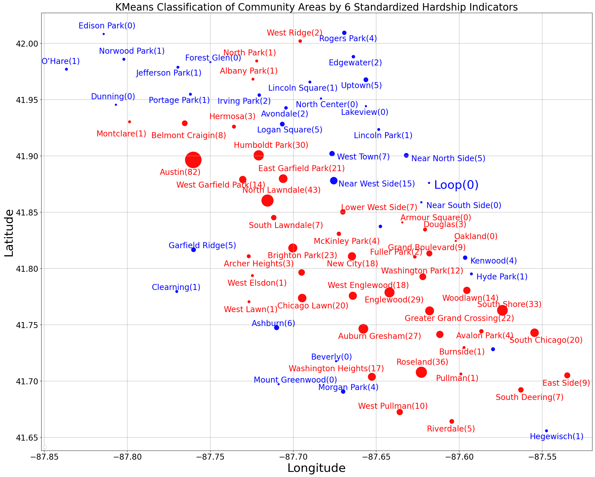

<!DOCTYPE html>


<html lang="en" data-content_root="../../" >

  <head>
    <meta charset="utf-8" />
    <meta name="viewport" content="width=device-width, initial-scale=1.0" /><meta name="viewport" content="width=device-width, initial-scale=1" />

    <title>4.2. The Chicago Hardship Index &#8212; An Introduction to Python Jupyter Notebooks for College Math Teachers</title>
  
  
  
  <script data-cfasync="false">
    document.documentElement.dataset.mode = localStorage.getItem("mode") || "";
    document.documentElement.dataset.theme = localStorage.getItem("theme") || "";
  </script>
  
  <!-- Loaded before other Sphinx assets -->
  <link href="../../_static/styles/theme.css?digest=3ee479438cf8b5e0d341" rel="stylesheet" />
<link href="../../_static/styles/bootstrap.css?digest=3ee479438cf8b5e0d341" rel="stylesheet" />
<link href="../../_static/styles/pydata-sphinx-theme.css?digest=3ee479438cf8b5e0d341" rel="stylesheet" />

  
  <link href="../../_static/vendor/fontawesome/6.5.2/css/all.min.css?digest=3ee479438cf8b5e0d341" rel="stylesheet" />
  <link rel="preload" as="font" type="font/woff2" crossorigin href="../../_static/vendor/fontawesome/6.5.2/webfonts/fa-solid-900.woff2" />
<link rel="preload" as="font" type="font/woff2" crossorigin href="../../_static/vendor/fontawesome/6.5.2/webfonts/fa-brands-400.woff2" />
<link rel="preload" as="font" type="font/woff2" crossorigin href="../../_static/vendor/fontawesome/6.5.2/webfonts/fa-regular-400.woff2" />

    <link rel="stylesheet" type="text/css" href="../../_static/pygments.css?v=fa44fd50" />
    <link rel="stylesheet" type="text/css" href="../../_static/styles/sphinx-book-theme.css?v=384b581d" />
    <link rel="stylesheet" type="text/css" href="../../_static/togglebutton.css?v=13237357" />
    <link rel="stylesheet" type="text/css" href="../../_static/copybutton.css?v=76b2166b" />
    <link rel="stylesheet" type="text/css" href="../../_static/mystnb.4510f1fc1dee50b3e5859aac5469c37c29e427902b24a333a5f9fcb2f0b3ac41.css" />
    <link rel="stylesheet" type="text/css" href="../../_static/sphinx-thebe.css?v=4fa983c6" />
    <link rel="stylesheet" type="text/css" href="../../_static/design-style.1e8bd061cd6da7fc9cf755528e8ffc24.min.css?v=0a3b3ea7" />
    <link rel="stylesheet" type="text/css" href="../../_static/custom.css?v=07d05eac" />
  
  <!-- Pre-loaded scripts that we'll load fully later -->
  <link rel="preload" as="script" href="../../_static/scripts/bootstrap.js?digest=3ee479438cf8b5e0d341" />
<link rel="preload" as="script" href="../../_static/scripts/pydata-sphinx-theme.js?digest=3ee479438cf8b5e0d341" />
  <script src="../../_static/vendor/fontawesome/6.5.2/js/all.min.js?digest=3ee479438cf8b5e0d341"></script>

    <script src="../../_static/documentation_options.js?v=9eb32ce0"></script>
    <script src="../../_static/doctools.js?v=9a2dae69"></script>
    <script src="../../_static/sphinx_highlight.js?v=dc90522c"></script>
    <script src="../../_static/clipboard.min.js?v=a7894cd8"></script>
    <script src="../../_static/copybutton.js?v=f281be69"></script>
    <script src="../../_static/scripts/sphinx-book-theme.js?v=efea14e4"></script>
    <script>let toggleHintShow = 'Click to show';</script>
    <script>let toggleHintHide = 'Click to hide';</script>
    <script>let toggleOpenOnPrint = 'true';</script>
    <script src="../../_static/togglebutton.js?v=4a39c7ea"></script>
    <script>var togglebuttonSelector = '.toggle, .admonition.dropdown';</script>
    <script src="../../_static/design-tabs.js?v=36754332"></script>
    <script>const THEBE_JS_URL = "https://unpkg.com/thebe@0.8.2/lib/index.js"; const thebe_selector = ".thebe,.cell"; const thebe_selector_input = "pre"; const thebe_selector_output = ".output, .cell_output"</script>
    <script async="async" src="../../_static/sphinx-thebe.js?v=c100c467"></script>
    <script>var togglebuttonSelector = '.toggle, .admonition.dropdown';</script>
    <script>const THEBE_JS_URL = "https://unpkg.com/thebe@0.8.2/lib/index.js"; const thebe_selector = ".thebe,.cell"; const thebe_selector_input = "pre"; const thebe_selector_output = ".output, .cell_output"</script>
    <script>DOCUMENTATION_OPTIONS.pagename = 'ProbStat/EDA/2. Chicago Hardship Index';</script>
    <script src="https://cdnjs.cloudflare.com/ajax/libs/require.js/2.3.4/require.min.js"></script>
    <link rel="index" title="Index" href="../../genindex.html" />
    <link rel="search" title="Search" href="../../search.html" />
    <link rel="next" title="4.3. Solution to Exercises" href="solutions.html" />
    <link rel="prev" title="4.1. The Great Migration" href="1.%20Great%20Migration.html" />
  <meta name="viewport" content="width=device-width, initial-scale=1"/>
  <meta name="docsearch:language" content="en"/>
  </head>
  
  
  <body data-bs-spy="scroll" data-bs-target=".bd-toc-nav" data-offset="180" data-bs-root-margin="0px 0px -60%" data-default-mode="">

  
  
  <div id="pst-skip-link" class="skip-link d-print-none"><a href="#main-content">Skip to main content</a></div>
  
  <div id="pst-scroll-pixel-helper"></div>
  
  <button type="button" class="btn rounded-pill" id="pst-back-to-top">
    <i class="fa-solid fa-arrow-up"></i>Back to top</button>

  
  <input type="checkbox"
          class="sidebar-toggle"
          id="pst-primary-sidebar-checkbox"/>
  <label class="overlay overlay-primary" for="pst-primary-sidebar-checkbox"></label>
  
  <input type="checkbox"
          class="sidebar-toggle"
          id="pst-secondary-sidebar-checkbox"/>
  <label class="overlay overlay-secondary" for="pst-secondary-sidebar-checkbox"></label>
  
  <div class="search-button__wrapper">
    <div class="search-button__overlay"></div>
    <div class="search-button__search-container">
<form class="bd-search d-flex align-items-center"
      action="../../search.html"
      method="get">
  <i class="fa-solid fa-magnifying-glass"></i>
  <input type="search"
         class="form-control"
         name="q"
         id="search-input"
         placeholder="Search this book..."
         aria-label="Search this book..."
         autocomplete="off"
         autocorrect="off"
         autocapitalize="off"
         spellcheck="false"/>
  <span class="search-button__kbd-shortcut"><kbd class="kbd-shortcut__modifier">Ctrl</kbd>+<kbd>K</kbd></span>
</form></div>
  </div>

  <div class="pst-async-banner-revealer d-none">
  <aside id="bd-header-version-warning" class="d-none d-print-none" aria-label="Version warning"></aside>
</div>

  
    <header class="bd-header navbar navbar-expand-lg bd-navbar d-print-none">
    </header>
  

  <div class="bd-container">
    <div class="bd-container__inner bd-page-width">
      
      
      
      <div class="bd-sidebar-primary bd-sidebar">
        

  
  <div class="sidebar-header-items sidebar-primary__section">
    
    
    
    
  </div>
  
    <div class="sidebar-primary-items__start sidebar-primary__section">
        <div class="sidebar-primary-item">

  

<a class="navbar-brand logo" href="../../intro.html">
  
  
  
  
  
    
    
      
    
    
    
    <script>document.write(``);</script>
  
  
</a></div>
        <div class="sidebar-primary-item">

 <script>
 document.write(`
   <button class="btn navbar-btn search-button-field search-button__button" title="Search" aria-label="Search" data-bs-placement="bottom" data-bs-toggle="tooltip">
    <i class="fa-solid fa-magnifying-glass"></i>
    <span class="search-button__default-text">Search</span>
    <span class="search-button__kbd-shortcut"><kbd class="kbd-shortcut__modifier">Ctrl</kbd>+<kbd class="kbd-shortcut__modifier">K</kbd></span>
   </button>
 `);
 </script></div>
        <div class="sidebar-primary-item"><nav class="bd-links bd-docs-nav" aria-label="Main">
    <div class="bd-toc-item navbar-nav active">
        
        <ul class="nav bd-sidenav bd-sidenav__home-link">
            <li class="toctree-l1">
                <a class="reference internal" href="../../intro.html">
                    An Introduction to  Python Jupyter Notebooks for College Math Teachers
                </a>
            </li>
        </ul>
        <ul class="current nav bd-sidenav">
<li class="toctree-l1 has-children"><a class="reference internal" href="../../Preface.html">1. PREFACE</a><details><summary><span class="toctree-toggle" role="presentation"><i class="fa-solid fa-chevron-down"></i></span></summary><ul>
<li class="toctree-l2"><a class="reference internal" href="../../JMM23.html">1.1. JMM 2023</a></li>
<li class="toctree-l2"><a class="reference internal" href="../../lab.html">1.2. JNB LAB: Patterns</a></li>
<li class="toctree-l2"><a class="reference internal" href="../../labsolutions.html">1.3. JNB Lab Solutions</a></li>
</ul>
</details></li>
<li class="toctree-l1 has-children"><a class="reference internal" href="../../PreCollege.html">2. PRE-COLLEGE</a><details><summary><span class="toctree-toggle" role="presentation"><i class="fa-solid fa-chevron-down"></i></span></summary><ul>
<li class="toctree-l2"><a class="reference internal" href="../../PreCollege/PreCollegeIntro.html">2.1. Introduction</a></li>
<li class="toctree-l2"><a class="reference internal" href="../../Elementary/Arithmetic/elementary.html">2.2. Elementary Blackboard Problems</a></li>
<li class="toctree-l2"><a class="reference internal" href="../../PreCollege/GettingStarted/python.html">2.3. Beginning Python Programming</a></li>
<li class="toctree-l2"><a class="reference internal" href="../../PreCollege/Celestial/Chicago.html">2.4. Glimpse of Chicago</a></li>
<li class="toctree-l2"><a class="reference internal" href="../../PreCollege/Celestial/steam.html">2.5. Arts in STEM (STEAM)</a></li>
<li class="toctree-l2"><a class="reference internal" href="../../PreCollege/solutions.html">2.6. Solution to Exercises</a></li>
<li class="toctree-l2"><a class="reference internal" href="../../PreCollege/Celestial/demo.html">2.7. JNB LAB: After-School Program Demo</a></li>
<li class="toctree-l2"><a class="reference internal" href="../../PreCollege/Celestial/demosolutions.html">2.8. JNB Lab Solutions</a></li>
</ul>
</details></li>
<li class="toctree-l1 has-children"><a class="reference internal" href="../../Intropy.html">3. PYTHON PROGRAMMING GUIDE - Thomas VanDrunen, Yiheng Liang</a><details><summary><span class="toctree-toggle" role="presentation"><i class="fa-solid fa-chevron-down"></i></span></summary><ul>
<li class="toctree-l2"><a class="reference internal" href="../../Programming/PythonProgrammingGuideIntro.html">3.1. Introduction</a></li>
<li class="toctree-l2"><a class="reference internal" href="../../Programming/Introduction_to_Python.html">3.2. Introduction to Python</a></li>
<li class="toctree-l2"><a class="reference internal" href="../../Programming/Data.html">3.3. Working with Data</a></li>
<li class="toctree-l2"><a class="reference internal" href="../../Programming/solutions.html">3.4. Solution to Exercises</a></li>
<li class="toctree-l2"><a class="reference internal" href="../../Programming/Plab.html">3.5. JNB Lab: Introduction to Python</a></li>
<li class="toctree-l2"><a class="reference internal" href="../../Programming/Plabsolutions.html">3.6. JNB Lab Solutions</a></li>
</ul>
</details></li>
<li class="toctree-l1 current active has-children"><a class="reference internal" href="../../Data.html">4. EXPLORATORY DATA ANALYSIS - Wheaton College Team</a><details open="open"><summary><span class="toctree-toggle" role="presentation"><i class="fa-solid fa-chevron-down"></i></span></summary><ul class="current">
<li class="toctree-l2"><a class="reference internal" href="1.%20Great%20Migration.html">4.1. The Great Migration</a></li>
<li class="toctree-l2 current active"><a class="current reference internal" href="#">4.2. The Chicago Hardship Index</a></li>
<li class="toctree-l2"><a class="reference internal" href="solutions.html">4.3. Solution to Exercises</a></li>
<li class="toctree-l2"><a class="reference internal" href="lab.html">4.4. JNB Lab</a></li>
<li class="toctree-l2"><a class="reference internal" href="labsolution.html">4.5. JNB Lab Solutions</a></li>
</ul>
</details></li>
<li class="toctree-l1 has-children"><a class="reference internal" href="../../Prob.html">5. PROBABILITY - Laura Gross, Yiheng Liang</a><details><summary><span class="toctree-toggle" role="presentation"><i class="fa-solid fa-chevron-down"></i></span></summary><ul>
<li class="toctree-l2"><a class="reference internal" href="../ProbIntro/prob.html">5.1. Introduction</a></li>
<li class="toctree-l2"><a class="reference internal" href="../ProbIntro/prob1.html">5.2. Random Numbers</a></li>
<li class="toctree-l2"><a class="reference internal" href="../ProbIntro/prob2.html">5.3. Probability</a></li>
<li class="toctree-l2"><a class="reference internal" href="../ProbIntro/prob3.html">5.4. Conditional Probability</a></li>
<li class="toctree-l2"><a class="reference internal" href="../ProbIntro/prob4.html">5.5. Probability Distributions</a></li>
<li class="toctree-l2"><a class="reference internal" href="../ProbIntro/prob4a.html">5.6. Random Walks</a></li>
<li class="toctree-l2"><a class="reference internal" href="../ProbIntro/prob5.html">5.7. Agent-based Models</a></li>
<li class="toctree-l2"><a class="reference internal" href="../ProbIntro/prob6.html">5.8. Mathematical Games</a></li>
<li class="toctree-l2"><a class="reference internal" href="../ProbIntro/solutions.html">5.9. Solution to Exercises</a></li>
<li class="toctree-l2"><a class="reference internal" href="../ProbIntro/lab.html">5.10. JNB Lab Homicides in Chicago</a></li>
<li class="toctree-l2"><a class="reference internal" href="../ProbIntro/labsolution.html">5.11. JNB Lab Solutions</a></li>
</ul>
</details></li>
<li class="toctree-l1 has-children"><a class="reference internal" href="../../Stat.html">6. STATISTICAL INFERENCE - Peter Jantsch, Claire Wagner</a><details><summary><span class="toctree-toggle" role="presentation"><i class="fa-solid fa-chevron-down"></i></span></summary><ul>
<li class="toctree-l2"><a class="reference internal" href="../StatInf/00_Instructor_Notes.html">6.1. Introduction and Instructor Notes</a></li>
<li class="toctree-l2"><a class="reference internal" href="../StatInf/01_Foundations.html">6.2. Foundations of Statistical Inference</a></li>
<li class="toctree-l2"><a class="reference internal" href="../StatInf/02_Inference_Categorical.html">6.3. Hypothesis Testing for Categorical Data</a></li>
<li class="toctree-l2"><a class="reference internal" href="../StatInf/03_Inference_Numerical.html">6.4. Hypothesis Testing for Numerical Data</a></li>
<li class="toctree-l2"><a class="reference internal" href="../StatInf/04_Regression.html">6.5. Linear Regression</a></li>
</ul>
</details></li>
<li class="toctree-l1 has-children"><a class="reference internal" href="../../AppliedCalc.html">7. APPLIED CALCULUS FOR DAILY LIFE - Wheaton College Team</a><details><summary><span class="toctree-toggle" role="presentation"><i class="fa-solid fa-chevron-down"></i></span></summary><ul>
<li class="toctree-l2"><a class="reference internal" href="../../Undergrad/AppliedCalc/AppliedCalculusIntro.html">7.1. Introduction</a></li>
<li class="toctree-l2"><a class="reference internal" href="../../Undergrad/AppliedCalc/twocommodity.html">7.2. Linear Systems and the Two-commodity Model</a></li>
<li class="toctree-l2"><a class="reference internal" href="../../Undergrad/AppliedCalc/marginal.html">7.3. Marginal and Average Cost</a></li>
<li class="toctree-l2"><a class="reference internal" href="../../Undergrad/AppliedCalc/design.html">7.4. Optimization and Object Design</a></li>
<li class="toctree-l2"><a class="reference internal" href="../../Undergrad/AppliedCalc/cobbs.html">7.5. Optimization and Cobbs-Douglas Production</a></li>
<li class="toctree-l2"><a class="reference internal" href="../../Undergrad/AppliedCalc/rates.html">7.6. Related Rates and Volumes</a></li>
<li class="toctree-l2"><a class="reference internal" href="../../Undergrad/AppliedCalc/football.html">7.7. Related Rates with Trig Functions and Football</a></li>
<li class="toctree-l2"><a class="reference internal" href="../../Undergrad/AppliedCalc/jnb7.html">7.8. Probability Distributions and Drive Thrus</a></li>
<li class="toctree-l2"><a class="reference internal" href="../../Undergrad/AppliedCalc/control.html">7.9. Normal Distribution and Process Control</a></li>
<li class="toctree-l2"><a class="reference internal" href="../../Undergrad/AppliedCalc/ols.html">7.10. Partial Derivatives and OLS Regression</a></li>
<li class="toctree-l2"><a class="reference internal" href="../../Undergrad/AppliedCalc/gini.html">7.11. Area Between Curves and the Gini Index</a></li>
<li class="toctree-l2"><a class="reference internal" href="../../Undergrad/AppliedCalc/income.html">7.12. Integral Test and Income Streams</a></li>
<li class="toctree-l2"><a class="reference internal" href="../../Undergrad/AppliedCalc/ode.html">7.13. Ordinary Differential Equations and Exponential Growth/Decay</a></li>
<li class="toctree-l2"><a class="reference internal" href="../../Undergrad/AppliedCalc/solutions.html">7.14. Solutions to Exercises</a></li>
<li class="toctree-l2"><a class="reference internal" href="../../Undergrad/AppliedCalc/AClab.html">7.15. JNB Lab: Calculus of Entropy in Daily Life and Monte Carlo Simulations</a></li>
<li class="toctree-l2"><a class="reference internal" href="../../Undergrad/AppliedCalc/AClabsolutions.html">7.16. JNB Lab Solutions</a></li>
</ul>
</details></li>
<li class="toctree-l1 has-children"><a class="reference internal" href="../../Calc.html">8. CALCULUS - Inne Singgih</a><details><summary><span class="toctree-toggle" role="presentation"><i class="fa-solid fa-chevron-down"></i></span></summary><ul>
<li class="toctree-l2"><a class="reference internal" href="../../Undergrad/Calculus/Intro.html">8.1. Introduction</a></li>
<li class="toctree-l2"><a class="reference internal" href="../../Undergrad/Calculus/2Functions.html">8.2. Functions</a></li>
<li class="toctree-l2"><a class="reference internal" href="../../Undergrad/Calculus/3Limits.html">8.3. Limits, Continuity, and Rates</a></li>
<li class="toctree-l2"><a class="reference internal" href="../../Undergrad/Calculus/4%20Derivatives.html">8.4. Derivatives</a></li>
<li class="toctree-l2"><a class="reference internal" href="../../Undergrad/Calculus/5%20Integrals.html">8.5. Integrals</a></li>
<li class="toctree-l2"><a class="reference internal" href="../../Undergrad/Calculus/6%20ParametricEquations.html">8.6. Parametric Equations</a></li>
<li class="toctree-l2"><a class="reference internal" href="../../Undergrad/Calculus/7%20Sequences%20and%20Series.html">8.7. Sequences and Series</a></li>
<li class="toctree-l2"><a class="reference internal" href="../../Undergrad/Calculus/Solutions.html">8.8. Solution to Exercises</a></li>
<li class="toctree-l2"><a class="reference internal" href="../../Undergrad/Calculus/clab.html">8.9. JNB LAB: Calculus Animations</a></li>
<li class="toctree-l2"><a class="reference internal" href="../../Undergrad/Calculus/clabsolution.html">8.10. JNB Lab Solutions</a></li>
</ul>
</details></li>
<li class="toctree-l1 has-children"><a class="reference internal" href="../../Linear.html">9. LINEAR ALGEBRA - Soheil Anbouhi</a><details><summary><span class="toctree-toggle" role="presentation"><i class="fa-solid fa-chevron-down"></i></span></summary><ul>
<li class="toctree-l2"><a class="reference internal" href="../../Undergrad/Linear/0.html">9.1. Introduction</a></li>
<li class="toctree-l2"><a class="reference internal" href="../../Undergrad/Linear/1.html">9.2. Linear Systems</a></li>
<li class="toctree-l2"><a class="reference internal" href="../../Undergrad/Linear/2.html">9.3. Matrices and Determinants</a></li>
<li class="toctree-l2"><a class="reference internal" href="../../Undergrad/Linear/3.html">9.4. Linear Transformations</a></li>
<li class="toctree-l2"><a class="reference internal" href="../../Undergrad/Linear/4.html">9.5. Eigenvalues and Eigenvectors</a></li>
<li class="toctree-l2"><a class="reference internal" href="../../Undergrad/Linear/5.html">9.6. Orthogonality</a></li>
<li class="toctree-l2"><a class="reference internal" href="../../Undergrad/Linear/Solutions.html">9.7. Solutions to Exercises</a></li>
<li class="toctree-l2"><a class="reference internal" href="../../Undergrad/Linear/LAlab.html">9.8. Linear Algebra Lab</a></li>
<li class="toctree-l2"><a class="reference internal" href="../../Undergrad/Linear/LAlabsolutions.html">9.9. Linear Algebra Lab Solutions</a></li>
</ul>
</details></li>
<li class="toctree-l1 has-children"><a class="reference internal" href="../../Aplin.html">10. LINEAR ALGEBRA AND OPTIMIZATION FOR DATA ANALYSIS - Wheaton College Team</a><details><summary><span class="toctree-toggle" role="presentation"><i class="fa-solid fa-chevron-down"></i></span></summary><ul>
<li class="toctree-l2"><a class="reference internal" href="../../Advanced/LinearAlgebra/Introduction.html">10.1. Introduction</a></li>
<li class="toctree-l2"><a class="reference internal" href="../../Advanced/LinearAlgebra/OLS/jnb1.html">10.2. OLS Linear Regression</a></li>
<li class="toctree-l2"><a class="reference internal" href="../../Advanced/LinearAlgebra/KMeans/jnb2.html">10.3. K-means Clustering</a></li>
<li class="toctree-l2"><a class="reference internal" href="../../Advanced/LinearAlgebra/PCA/jnb3.html">10.4. Dimension Reduction by Principal Component Analysis</a></li>
<li class="toctree-l2"><a class="reference internal" href="../../Advanced/LinearAlgebra/SVM/jnb4.html">10.5. Binary Classification of Labelled Data by Support Vector Machines</a></li>
<li class="toctree-l2"><a class="reference internal" href="../../Advanced/LinearAlgebra/solutions.html">10.6. Solution to Exercises</a></li>
<li class="toctree-l2"><a class="reference internal" href="../../Advanced/LinearAlgebra/ALlab.html">10.7. JNB LAB: Linear Algebra for Data Analysis</a></li>
<li class="toctree-l2"><a class="reference internal" href="../../Advanced/LinearAlgebra/ALlabsolution.html">10.8. JNB Lab Solutions</a></li>
</ul>
</details></li>
<li class="toctree-l1 has-children"><a class="reference internal" href="../../DifEq.html">11. DIFFERENTIAL EQUATIONS - Rachel Petrik</a><details><summary><span class="toctree-toggle" role="presentation"><i class="fa-solid fa-chevron-down"></i></span></summary><ul>
<li class="toctree-l2"><a class="reference internal" href="../../Undergrad/DifEq/Differential%20Equations.html">11.1. Overview of Chapter</a></li>
<li class="toctree-l2"><a class="reference internal" href="../../Undergrad/DifEq/DE2.html">11.2. Introduction to Differential Equations</a></li>
<li class="toctree-l2"><a class="reference internal" href="../../Undergrad/DifEq/DE3.html">11.3. First-Order Differential Equations</a></li>
<li class="toctree-l2"><a class="reference internal" href="../../Undergrad/DifEq/DE4.html">11.4. Second-Order Differential Equations</a></li>
<li class="toctree-l2"><a class="reference internal" href="../../Undergrad/DifEq/DE5.html">11.5. Systems of First-Order Differential Equations</a></li>
<li class="toctree-l2"><a class="reference internal" href="../../Undergrad/DifEq/DE6.html">11.6. Laplace Transforms</a></li>
<li class="toctree-l2"><a class="reference internal" href="../../Undergrad/DifEq/DESolutions.html">11.7. Solutions to Exercises</a></li>
<li class="toctree-l2"><a class="reference internal" href="../../Undergrad/DifEq/Differential%20Equations%20Book%201%20Lab.html">11.8. Differential Equations Lab</a></li>
<li class="toctree-l2"><a class="reference internal" href="../../Undergrad/DifEq/Differential%20Equations%20Book%201%20Lab%20Answer%20Key.html">11.9. Differential Equations Lab Answer Key</a></li>
</ul>
</details></li>
<li class="toctree-l1 has-children"><a class="reference internal" href="../../AppliedDifEq.html">12. DIFFERENTIAL EQUATIONS FOR THE BENEFIT OF SOCIETY - Wheaton College Team</a><details><summary><span class="toctree-toggle" role="presentation"><i class="fa-solid fa-chevron-down"></i></span></summary><ul>
<li class="toctree-l2"><a class="reference internal" href="../../Undergrad/AppliedDifEq/AppliedDiffEqIntro.html">12.1. Introduction</a></li>
<li class="toctree-l2"><a class="reference internal" href="../../Undergrad/AppliedDifEq/covid.html">12.2. Logistic Growth and COVID-19</a></li>
<li class="toctree-l2"><a class="reference internal" href="../../Undergrad/AppliedDifEq/sir.html">12.3. The Basic SIR Model</a></li>
<li class="toctree-l2"><a class="reference internal" href="../../Undergrad/AppliedDifEq/cholera.html">12.4. Cholera in Haiti</a></li>
<li class="toctree-l2"><a class="reference internal" href="../../Undergrad/AppliedDifEq/cws/cws.html">12.5. CWS Model of Alzheimer’s Disease</a></li>
<li class="toctree-l2"><a class="reference internal" href="../../Undergrad/AppliedDifEq/gravity/gravity.html">12.6. Gravity Fed Water Delivery</a></li>
<li class="toctree-l2"><a class="reference internal" href="../../Undergrad/AppliedDifEq/erc/erc.html">12.7. Earthquake Resistant Construction</a></li>
<li class="toctree-l2"><a class="reference internal" href="../../Undergrad/AppliedDifEq/solutions.html">12.8. Solutions to Exercises</a></li>
<li class="toctree-l2"><a class="reference internal" href="../../Undergrad/AppliedDifEq/hiv/lab.html">12.9. JNB Lab: HIV-AIDS</a></li>
<li class="toctree-l2"><a class="reference internal" href="../../Undergrad/AppliedDifEq/labsolutions.html">12.10. JNB Lab Solutions</a></li>
</ul>
</details></li>
<li class="toctree-l1 has-children"><a class="reference internal" href="../../ComplexVar.html">13. COMPLEX VARIABLES IN GROUNDWATER MODELING - Wheaton College Team</a><details><summary><span class="toctree-toggle" role="presentation"><i class="fa-solid fa-chevron-down"></i></span></summary><ul>
<li class="toctree-l2"><a class="reference internal" href="../../Advanced/Complex/complex_variables_1.html">13.1. Setting the Scene</a></li>
<li class="toctree-l2"><a class="reference internal" href="../../Advanced/Complex/complex_variables_2.html">13.2. Complex Analysis Background</a></li>
<li class="toctree-l2"><a class="reference internal" href="../../Advanced/Complex/complex_variables_3.html">13.3. Idealized Groundwater Flow</a></li>
<li class="toctree-l2"><a class="reference internal" href="../../Advanced/Complex/complex_variables_4.html">13.4. Contaminant Extraction Modeling</a></li>
<li class="toctree-l2"><a class="reference internal" href="../../Advanced/Complex/complex_variables_solutions.html">13.5. Solutions to Exercises</a></li>
<li class="toctree-l2"><a class="reference internal" href="../../Advanced/Complex/complex_variables_lab.html">13.6. JNB LAB: Complex Potentials and Contaminant Flow</a></li>
<li class="toctree-l2"><a class="reference internal" href="../../Advanced/Complex/complex_variables_lab_solution.html">13.7. JNB Lab Solutions</a></li>
</ul>
</details></li>
<li class="toctree-l1 has-children"><a class="reference internal" href="../../AdvData.html">14. ADVANCED DATA ANALYSIS - Ying Li, Jonathan Zhu, Claire Wagner</a><details><summary><span class="toctree-toggle" role="presentation"><i class="fa-solid fa-chevron-down"></i></span></summary><ul>
<li class="toctree-l2"><a class="reference internal" href="../../Advanced/AdvDataAnalysis/sec0_data.html">14.1. Before Reading</a></li>
<li class="toctree-l2"><a class="reference internal" href="../../Advanced/AdvDataAnalysis/sec1_preprocessing.html">14.2. Preprocessing</a></li>
<li class="toctree-l2"><a class="reference internal" href="../../Advanced/AdvDataAnalysis/sec2_transform_features.html">14.3. About Text Data</a></li>
<li class="toctree-l2"><a class="reference internal" href="../../Advanced/AdvDataAnalysis/sec3_doc_embedding.html">14.4. Document Embedding</a></li>
<li class="toctree-l2"><a class="reference internal" href="../../Advanced/AdvDataAnalysis/sec4_classification_algos.html">14.5. Classification of Texts</a></li>
<li class="toctree-l2"><a class="reference internal" href="../../Advanced/AdvDataAnalysis/sec5_classification_eval.html">14.6. Evaluating Classification</a></li>
<li class="toctree-l2"><a class="reference internal" href="../../Advanced/AdvDataAnalysis/sec6_applications.html">14.7. Applications</a></li>
<li class="toctree-l2"><a class="reference internal" href="../../Advanced/AdvDataAnalysis/solutions.html">14.8. Solutions to Exercises</a></li>
</ul>
</details></li>
<li class="toctree-l1 has-children"><a class="reference internal" href="../../ComplexSystems.html">15. COMPLEX SYSTEMS - Wheaton College Team</a><details><summary><span class="toctree-toggle" role="presentation"><i class="fa-solid fa-chevron-down"></i></span></summary><ul>
<li class="toctree-l2"><a class="reference internal" href="../../Advanced/ComplexSystems/complex_systems_1.html">15.1. Introduction</a></li>
<li class="toctree-l2"><a class="reference internal" href="../../Advanced/ComplexSystems/complex_systems_2.html">15.2. Fundamental Concepts</a></li>
<li class="toctree-l2"><a class="reference internal" href="../../Advanced/ComplexSystems/complex_systems_3.html">15.3. Mathematical Concepts from Equilibrium Statistical Physics</a></li>
<li class="toctree-l2"><a class="reference internal" href="../../Advanced/ComplexSystems/complex_systems_4.html">15.4. Societal Applications</a></li>
<li class="toctree-l2"><a class="reference internal" href="../../Advanced/ComplexSystems/complex_systems_solutions.html">15.5. Solution to Exercises</a></li>
<li class="toctree-l2"><a class="reference internal" href="../../Advanced/ComplexSystems/complex_systems_lab.html">15.6. JNB LAB: Complex Systems</a></li>
<li class="toctree-l2"><a class="reference internal" href="../../Advanced/ComplexSystems/complex_systems_labsolution.html">15.7. JNB Lab Solutions</a></li>
</ul>
</details></li>
<li class="toctree-l1"><a class="reference internal" href="../../genindex.html">Index</a></li>
</ul>

    </div>
</nav></div>
    </div>
  
  
  <div class="sidebar-primary-items__end sidebar-primary__section">
  </div>
  
  <div id="rtd-footer-container"></div>


      </div>
      
      <main id="main-content" class="bd-main" role="main">
        
        

<div class="sbt-scroll-pixel-helper"></div>

          <div class="bd-content">
            <div class="bd-article-container">
              
              <div class="bd-header-article d-print-none">
<div class="header-article-items header-article__inner">
  
    <div class="header-article-items__start">
      
        <div class="header-article-item"><label class="sidebar-toggle primary-toggle btn btn-sm" for="__primary" title="Toggle primary sidebar" data-bs-placement="bottom" data-bs-toggle="tooltip">
  <span class="fa-solid fa-bars"></span>
</label></div>
      
    </div>
  
  
    <div class="header-article-items__end">
      
        <div class="header-article-item">

<div class="article-header-buttons">


<div class="dropdown dropdown-launch-buttons">
  <button class="btn dropdown-toggle" type="button" data-bs-toggle="dropdown" aria-expanded="false" aria-label="Launch interactive content">
    <i class="fas fa-rocket"></i>
  </button>
  <ul class="dropdown-menu">
      
      
      
      <li><a href="https://mybinder.org/v2/gh/timothyprojectGiG/JB_Math_Textbook/main?urlpath=tree/src/ProbStat/EDA/2. Chicago Hardship Index.ipynb" target="_blank"
   class="btn btn-sm dropdown-item"
   title="Launch onBinder"
   data-bs-placement="left" data-bs-toggle="tooltip"
>
  

<span class="btn__icon-container">
  
    
  </span>
<span class="btn__text-container">Binder</span>
</a>
</li>
      
  </ul>
</div>


<div class="dropdown dropdown-source-buttons">
  <button class="btn dropdown-toggle" type="button" data-bs-toggle="dropdown" aria-expanded="false" aria-label="Source repositories">
    <i class="fab fa-github"></i>
  </button>
  <ul class="dropdown-menu">
      
      
      
      <li><a href="https://github.com/timothyprojectGiG/JB_Math_Textbook" target="_blank"
   class="btn btn-sm btn-source-repository-button dropdown-item"
   title="Source repository"
   data-bs-placement="left" data-bs-toggle="tooltip"
>
  

<span class="btn__icon-container">
  <i class="fab fa-github"></i>
  </span>
<span class="btn__text-container">Repository</span>
</a>
</li>
      
      
      
      
      <li><a href="https://github.com/timothyprojectGiG/JB_Math_Textbook/issues/new?title=Issue%20on%20page%20%2FProbStat/EDA/2. Chicago Hardship Index.html&body=Your%20issue%20content%20here." target="_blank"
   class="btn btn-sm btn-source-issues-button dropdown-item"
   title="Open an issue"
   data-bs-placement="left" data-bs-toggle="tooltip"
>
  

<span class="btn__icon-container">
  <i class="fas fa-lightbulb"></i>
  </span>
<span class="btn__text-container">Open issue</span>
</a>
</li>
      
  </ul>
</div>


<div class="dropdown dropdown-download-buttons">
  <button class="btn dropdown-toggle" type="button" data-bs-toggle="dropdown" aria-expanded="false" aria-label="Download this page">
    <i class="fas fa-download"></i>
  </button>
  <ul class="dropdown-menu">
      
      
      
      <li><a href="../../_sources/ProbStat/EDA/2. Chicago Hardship Index.ipynb" target="_blank"
   class="btn btn-sm btn-download-source-button dropdown-item"
   title="Download source file"
   data-bs-placement="left" data-bs-toggle="tooltip"
>
  

<span class="btn__icon-container">
  <i class="fas fa-file"></i>
  </span>
<span class="btn__text-container">.ipynb</span>
</a>
</li>
      
      
      
      
      <li>
<button onclick="window.print()"
  class="btn btn-sm btn-download-pdf-button dropdown-item"
  title="Print to PDF"
  data-bs-placement="left" data-bs-toggle="tooltip"
>
  

<span class="btn__icon-container">
  <i class="fas fa-file-pdf"></i>
  </span>
<span class="btn__text-container">.pdf</span>
</button>
</li>
      
  </ul>
</div>


<button onclick="toggleFullScreen()"
  class="btn btn-sm btn-fullscreen-button"
  title="Fullscreen mode"
  data-bs-placement="bottom" data-bs-toggle="tooltip"
>
  

<span class="btn__icon-container">
  <i class="fas fa-expand"></i>
  </span>

</button>


<script>
document.write(`
  <button class="btn btn-sm navbar-btn theme-switch-button" title="light/dark" aria-label="light/dark" data-bs-placement="bottom" data-bs-toggle="tooltip">
    <span class="theme-switch nav-link" data-mode="light"><i class="fa-solid fa-sun fa-lg"></i></span>
    <span class="theme-switch nav-link" data-mode="dark"><i class="fa-solid fa-moon fa-lg"></i></span>
    <span class="theme-switch nav-link" data-mode="auto"><i class="fa-solid fa-circle-half-stroke fa-lg"></i></span>
  </button>
`);
</script>


<script>
document.write(`
  <button class="btn btn-sm navbar-btn search-button search-button__button" title="Search" aria-label="Search" data-bs-placement="bottom" data-bs-toggle="tooltip">
    <i class="fa-solid fa-magnifying-glass fa-lg"></i>
  </button>
`);
</script>
<label class="sidebar-toggle secondary-toggle btn btn-sm" for="__secondary"title="Toggle secondary sidebar" data-bs-placement="bottom" data-bs-toggle="tooltip">
    <span class="fa-solid fa-list"></span>
</label>
</div></div>
      
    </div>
  
</div>
</div>
              
              

<div id="jb-print-docs-body" class="onlyprint">
    <h1>The Chicago Hardship Index</h1>
    <!-- Table of contents -->
    <div id="print-main-content">
        <div id="jb-print-toc">
            
            <div>
                <h2> Contents </h2>
            </div>
            <nav aria-label="Page">
                <ul class="visible nav section-nav flex-column">
<li class="toc-h2 nav-item toc-entry"><a class="reference internal nav-link" href="#raw-data-and-summary-statistics">4.2.1. Raw Data and Summary Statistics</a></li>
<li class="toc-h2 nav-item toc-entry"><a class="reference internal nav-link" href="#summary-statistics">4.2.2. Summary Statistics</a></li>
<li class="toc-h2 nav-item toc-entry"><a class="reference internal nav-link" href="#k-means-clustering">4.2.3. K-Means Clustering</a></li>
</ul>
            </nav>
        </div>
    </div>
</div>

              
                
<div id="searchbox"></div>
                <article class="bd-article">
                  
  <div class="cell docutils container">
<div class="cell_input docutils container">
<div class="highlight-ipython3 notranslate"><div class="highlight"><pre><span></span><span class="c1">#import libraries</span>
<span class="kn">import</span> <span class="nn">pandas</span> <span class="k">as</span> <span class="nn">pd</span>
<span class="kn">import</span> <span class="nn">numpy</span> <span class="k">as</span> <span class="nn">np</span>
<span class="kn">import</span> <span class="nn">matplotlib.pyplot</span> <span class="k">as</span> <span class="nn">plt</span> <span class="c1"># plotting library</span>
<span class="kn">import</span> <span class="nn">sklearn</span>
<span class="kn">from</span> <span class="nn">sklearn.cluster</span> <span class="kn">import</span> <span class="n">KMeans</span>
</pre></div>
</div>
</div>
</div>
<section class="tex2jax_ignore mathjax_ignore" id="the-chicago-hardship-index">
<h1><span class="section-number">4.2. </span>The Chicago Hardship Index<a class="headerlink" href="#the-chicago-hardship-index" title="Link to this heading">#</a></h1>
<section id="raw-data-and-summary-statistics">
<h2><span class="section-number">4.2.1. </span>Raw Data and Summary Statistics<a class="headerlink" href="#raw-data-and-summary-statistics" title="Link to this heading">#</a></h2>
<p>The hardship index is a way to use data to explore urban inequities. Exploratory data analysis for social justice issues should aim to be accessible, significant, equitable, impartial, and transparent.</p>

<p>The hardship index (HI) is the mean of six indicator estimates. Each indicator has been normalized and scaled from 0-100 (except per capita income). A higher hardship index value indicates greater hardship. The 6 raw indicator estimates are complicated by time variation over 5-year periods (US Census Bureau 2008) and geographical boundary approximation (Great Cities Institute 2019). The indicators are</p>
<ul class="simple">
<li><p>UNEMP = % of community age 16 and older who are unemployed</p></li>
<li><p>NOHS = % of community age 25 and older without a high school diploma</p></li>
<li><p>DEP = % of community who are dependent (under age 18 or over age 64)</p></li>
<li><p>HOUS= % of community with overcrowded housing (more than 1 occupant per room)</p></li>
<li><p>POV = % below federal poverty line</p></li>
<li><p>INC = per capita income</p></li>
</ul>
<p>Datafile:  ‘HIHOM20142017.xlsx’</p>
<p>Data Source: <a class="reference external" href="https://greatcities.uic.edu/wp-content/uploads/2016/07/GCI-Hardship-Index-Fact-SheetV2.pdf">https://greatcities.uic.edu/wp-content/uploads/2016/07/GCI-Hardship-Index-Fact-SheetV2.pdf</a> (2010-2014) <a class="reference external" href="https://greatcities.uic.edu/wp-content/uploads/2019/12/Hardship-Index-Fact-Sheet-2017-ACS-Final-1.pdf">https://greatcities.uic.edu/wp-content/uploads/2019/12/Hardship-Index-Fact-Sheet-2017-ACS-Final-1.pdf</a> (2013-2017).</p>
</section>
<section id="summary-statistics">
<h2><span class="section-number">4.2.2. </span>Summary Statistics<a class="headerlink" href="#summary-statistics" title="Link to this heading">#</a></h2>
<ol class="arabic simple">
<li><p>Upload the hardship index data for 2014 and 2017. The first two of seventy-seven community areas in Chicago are printed below.</p></li>
</ol>
<div class="cell docutils container">
<div class="cell_input docutils container">
<div class="highlight-ipython3 notranslate"><div class="highlight"><pre><span></span><span class="n">raw_hardship</span><span class="o">=</span><span class="n">pd</span><span class="o">.</span><span class="n">read_excel</span><span class="p">(</span><span class="s1">&#39;HIHOM20142017.xlsx&#39;</span><span class="p">)</span>
<span class="n">raw_hardship</span><span class="o">.</span><span class="n">head</span><span class="p">(</span><span class="mi">2</span><span class="p">)</span>
</pre></div>
</div>
</div>
<div class="cell_output docutils container">
<div class="output text_html"><div>
<style scoped>
    .dataframe tbody tr th:only-of-type {
        vertical-align: middle;
    }

    .dataframe tbody tr th {
        vertical-align: top;
    }

    .dataframe thead th {
        text-align: right;
    }
</style>
<table border="1" class="dataframe">
  <thead>
    <tr style="text-align: right;">
      <th></th>
      <th>Community</th>
      <th>index</th>
      <th>population(K)</th>
      <th>HI14</th>
      <th>UNEMP14</th>
      <th>NOHS14</th>
      <th>DEP14</th>
      <th>HOUS14</th>
      <th>POV14</th>
      <th>INC14</th>
      <th>...</th>
      <th>UNEMP17</th>
      <th>NOHS17</th>
      <th>DEP17</th>
      <th>HOUS17</th>
      <th>POV17</th>
      <th>INC17</th>
      <th>HOM14</th>
      <th>HOM17</th>
      <th>LAT</th>
      <th>LON</th>
    </tr>
  </thead>
  <tbody>
    <tr>
      <th>0</th>
      <td>Albany Park</td>
      <td>13</td>
      <td>48.0</td>
      <td>47.0</td>
      <td>10.0</td>
      <td>26.9</td>
      <td>32.2</td>
      <td>9.5</td>
      <td>18.3</td>
      <td>23240</td>
      <td>...</td>
      <td>7.1</td>
      <td>14.3</td>
      <td>32.0</td>
      <td>8.6</td>
      <td>16.5</td>
      <td>25848</td>
      <td>2</td>
      <td>1</td>
      <td>41.96823</td>
      <td>-87.72421</td>
    </tr>
    <tr>
      <th>1</th>
      <td>Archer Heights</td>
      <td>56</td>
      <td>14.0</td>
      <td>54.4</td>
      <td>14.3</td>
      <td>32.2</td>
      <td>38.5</td>
      <td>9.8</td>
      <td>14.6</td>
      <td>16507</td>
      <td>...</td>
      <td>9.2</td>
      <td>17.9</td>
      <td>40.2</td>
      <td>9.7</td>
      <td>15.9</td>
      <td>18497</td>
      <td>0</td>
      <td>3</td>
      <td>41.81093</td>
      <td>-87.72677</td>
    </tr>
  </tbody>
</table>
<p>2 rows × 21 columns</p>
</div></div></div>
</div>
<ol class="arabic simple" start="2">
<li><p>Separate the 2014 and 2017 hardship index (HI) data into two dataframes called “dfHI14” and “dfHI17.” The column names will reflect the year.</p></li>
</ol>
<div class="cell docutils container">
<div class="cell_input docutils container">
<div class="highlight-ipython3 notranslate"><div class="highlight"><pre><span></span><span class="n">dfHI14</span><span class="o">=</span><span class="n">raw_hardship</span><span class="p">[[</span><span class="s2">&quot;Community&quot;</span><span class="p">,</span><span class="s2">&quot;HI14&quot;</span><span class="p">,</span><span class="s2">&quot;UNEMP14&quot;</span><span class="p">,</span><span class="s2">&quot;NOHS14&quot;</span><span class="p">,</span><span class="s2">&quot;DEP14&quot;</span><span class="p">,</span><span class="s2">&quot;HOUS14&quot;</span><span class="p">,</span><span class="s2">&quot;POV14&quot;</span><span class="p">,</span><span class="s2">&quot;INC14&quot;</span><span class="p">]]</span>
<span class="n">dfHI14</span> <span class="o">=</span> <span class="n">dfHI14</span><span class="o">.</span><span class="n">rename</span><span class="p">(</span><span class="n">columns</span> <span class="o">=</span> <span class="p">{</span><span class="s1">&#39;Community&#39;</span><span class="p">:</span><span class="s1">&#39;Community14&#39;</span><span class="p">})</span>
<span class="n">dfHI17</span><span class="o">=</span><span class="n">raw_hardship</span><span class="p">[[</span><span class="s2">&quot;Community&quot;</span><span class="p">,</span><span class="s2">&quot;HI17&quot;</span><span class="p">,</span><span class="s2">&quot;UNEMP17&quot;</span><span class="p">,</span><span class="s2">&quot;NOHS17&quot;</span><span class="p">,</span><span class="s2">&quot;DEP17&quot;</span><span class="p">,</span><span class="s2">&quot;HOUS17&quot;</span><span class="p">,</span><span class="s2">&quot;POV17&quot;</span><span class="p">,</span><span class="s2">&quot;INC17&quot;</span><span class="p">]]</span>
<span class="n">dfHI17</span> <span class="o">=</span> <span class="n">dfHI17</span><span class="o">.</span><span class="n">rename</span><span class="p">(</span><span class="n">columns</span> <span class="o">=</span> <span class="p">{</span><span class="s1">&#39;Community&#39;</span><span class="p">:</span><span class="s1">&#39;Community17&#39;</span><span class="p">})</span>
</pre></div>
</div>
</div>
</div>
<ol class="arabic simple" start="3">
<li><p>The first two communities’ HI and the indicator scores for 2014 are printed below.</p></li>
</ol>
<div class="cell docutils container">
<div class="cell_input docutils container">
<div class="highlight-ipython3 notranslate"><div class="highlight"><pre><span></span><span class="n">dfHI14</span><span class="o">.</span><span class="n">head</span><span class="p">(</span><span class="mi">2</span><span class="p">)</span>
</pre></div>
</div>
</div>
<div class="cell_output docutils container">
<div class="output text_html"><div>
<style scoped>
    .dataframe tbody tr th:only-of-type {
        vertical-align: middle;
    }

    .dataframe tbody tr th {
        vertical-align: top;
    }

    .dataframe thead th {
        text-align: right;
    }
</style>
<table border="1" class="dataframe">
  <thead>
    <tr style="text-align: right;">
      <th></th>
      <th>Community14</th>
      <th>HI14</th>
      <th>UNEMP14</th>
      <th>NOHS14</th>
      <th>DEP14</th>
      <th>HOUS14</th>
      <th>POV14</th>
      <th>INC14</th>
    </tr>
  </thead>
  <tbody>
    <tr>
      <th>0</th>
      <td>Albany Park</td>
      <td>47.0</td>
      <td>10.0</td>
      <td>26.9</td>
      <td>32.2</td>
      <td>9.5</td>
      <td>18.3</td>
      <td>23240</td>
    </tr>
    <tr>
      <th>1</th>
      <td>Archer Heights</td>
      <td>54.4</td>
      <td>14.3</td>
      <td>32.2</td>
      <td>38.5</td>
      <td>9.8</td>
      <td>14.6</td>
      <td>16507</td>
    </tr>
  </tbody>
</table>
</div></div></div>
</div>
<ol class="arabic simple" start="4">
<li><p>The scores for two communities in 2017 are printed below.</p></li>
</ol>
<div class="cell docutils container">
<div class="cell_input docutils container">
<div class="highlight-ipython3 notranslate"><div class="highlight"><pre><span></span><span class="n">dfHI17</span><span class="o">.</span><span class="n">head</span><span class="p">(</span><span class="mi">2</span><span class="p">)</span>
</pre></div>
</div>
</div>
<div class="cell_output docutils container">
<div class="output text_html"><div>
<style scoped>
    .dataframe tbody tr th:only-of-type {
        vertical-align: middle;
    }

    .dataframe tbody tr th {
        vertical-align: top;
    }

    .dataframe thead th {
        text-align: right;
    }
</style>
<table border="1" class="dataframe">
  <thead>
    <tr style="text-align: right;">
      <th></th>
      <th>Community17</th>
      <th>HI17</th>
      <th>UNEMP17</th>
      <th>NOHS17</th>
      <th>DEP17</th>
      <th>HOUS17</th>
      <th>POV17</th>
      <th>INC17</th>
    </tr>
  </thead>
  <tbody>
    <tr>
      <th>0</th>
      <td>Albany Park</td>
      <td>45.7</td>
      <td>7.1</td>
      <td>14.3</td>
      <td>32.0</td>
      <td>8.6</td>
      <td>16.5</td>
      <td>25848</td>
    </tr>
    <tr>
      <th>1</th>
      <td>Archer Heights</td>
      <td>56.1</td>
      <td>9.2</td>
      <td>17.9</td>
      <td>40.2</td>
      <td>9.7</td>
      <td>15.9</td>
      <td>18497</td>
    </tr>
  </tbody>
</table>
</div></div></div>
</div>
<ol class="arabic simple" start="5">
<li><p>Calculate the summary statistics for indicators from the data in all seventy-seven communities.
For example, we calculate statistics for the HOUS indicator in 2017. By replacing “HOUS17,” statistics for other indicators can be calculated–like “HI17,” “NOHS17”, etc.</p></li>
</ol>
<div class="cell docutils container">
<div class="cell_input docutils container">
<div class="highlight-ipython3 notranslate"><div class="highlight"><pre><span></span><span class="n">x</span><span class="o">=</span><span class="n">dfHI17</span><span class="p">[</span><span class="s2">&quot;HOUS17&quot;</span><span class="p">]</span>
<span class="kn">import</span> <span class="nn">numpy</span>
<span class="nb">print</span><span class="p">(</span><span class="s2">&quot;Minimum: &quot;</span><span class="p">,</span> <span class="n">numpy</span><span class="o">.</span><span class="n">min</span><span class="p">(</span><span class="n">x</span><span class="p">))</span>
<span class="nb">print</span><span class="p">(</span><span class="s2">&quot;Maximum: &quot;</span><span class="p">,</span> <span class="n">numpy</span><span class="o">.</span><span class="n">max</span><span class="p">(</span><span class="n">x</span><span class="p">))</span>
<span class="nb">print</span><span class="p">(</span><span class="s2">&quot;Standard Deviation: &quot;</span><span class="p">,</span> <span class="n">numpy</span><span class="o">.</span><span class="n">std</span><span class="p">(</span><span class="n">x</span><span class="p">))</span>
<span class="nb">print</span><span class="p">(</span><span class="s2">&quot;Mean: &quot;</span><span class="p">,</span> <span class="n">numpy</span><span class="o">.</span><span class="n">mean</span><span class="p">(</span><span class="n">x</span><span class="p">))</span>
<span class="nb">print</span><span class="p">(</span><span class="s2">&quot;Median: &quot;</span><span class="p">,</span> <span class="n">numpy</span><span class="o">.</span><span class="n">median</span><span class="p">(</span><span class="n">x</span><span class="p">))</span>
</pre></div>
</div>
</div>
<div class="cell_output docutils container">
<div class="output stream highlight-myst-ansi notranslate"><div class="highlight"><pre><span></span>Minimum:  0.3
Maximum:  13.6
Standard Deviation:  2.87070805717617
Mean:  4.114285714285715
Median:  3.3
</pre></div>
</div>
</div>
</div>
<p>The table below lists the indicator values for several communities, as shown above, and the summary statistics for each indicator.</p>

</section>
<section id="k-means-clustering">
<h2><span class="section-number">4.2.3. </span>K-Means Clustering<a class="headerlink" href="#k-means-clustering" title="Link to this heading">#</a></h2>
<p>We will use a machine learning method called K-means clustering  (see Chapter 10.3) to visualize patterns in the geographic information. By plotting the homocide data with it, twe can investigate a relationship between location, hardship cluster, and number of homocides.  We use the sklearn library for machine learning.</p>
<p>Datafile:  ‘standardizedindicators.xlsx’</p>
<ol class="arabic simple">
<li><p>Read standardized hardship index and homicde data.</p></li>
</ol>
<div class="cell docutils container">
<div class="cell_input docutils container">
<div class="highlight-ipython3 notranslate"><div class="highlight"><pre><span></span><span class="n">hom_df</span> <span class="o">=</span> <span class="n">pd</span><span class="o">.</span><span class="n">read_excel</span><span class="p">(</span><span class="s1">&#39;standardizedindicators.xlsx&#39;</span><span class="p">)</span>
<span class="n">hom_df</span><span class="o">.</span><span class="n">head</span><span class="p">(</span><span class="mi">2</span><span class="p">)</span>
</pre></div>
</div>
</div>
<div class="cell_output docutils container">
<div class="output text_html"><div>
<style scoped>
    .dataframe tbody tr th:only-of-type {
        vertical-align: middle;
    }

    .dataframe tbody tr th {
        vertical-align: top;
    }

    .dataframe thead th {
        text-align: right;
    }
</style>
<table border="1" class="dataframe">
  <thead>
    <tr style="text-align: right;">
      <th></th>
      <th>Community</th>
      <th>index</th>
      <th>HI14</th>
      <th>UNEMP14</th>
      <th>NOHS14</th>
      <th>DEP14</th>
      <th>HOUS14</th>
      <th>POV14</th>
      <th>INC14</th>
      <th>HI17</th>
      <th>UNEMP17</th>
      <th>NOHS17</th>
      <th>DEP17</th>
      <th>HOUS17</th>
      <th>POV17</th>
      <th>INC17</th>
      <th>HOM14</th>
      <th>HOM17</th>
      <th>LAT</th>
      <th>LON</th>
    </tr>
  </thead>
  <tbody>
    <tr>
      <th>0</th>
      <td>Albany Park</td>
      <td>13</td>
      <td>47.0</td>
      <td>-0.705481</td>
      <td>0.667993</td>
      <td>-0.470891</td>
      <td>1.42992</td>
      <td>-0.353466</td>
      <td>-0.165118</td>
      <td>45.7</td>
      <td>-0.706842</td>
      <td>0.506067</td>
      <td>-0.530539</td>
      <td>1.562581</td>
      <td>-0.418499</td>
      <td>-0.183089</td>
      <td>2</td>
      <td>1</td>
      <td>41.96823</td>
      <td>-87.72421</td>
    </tr>
    <tr>
      <th>1</th>
      <td>Archer Heights</td>
      <td>56</td>
      <td>54.4</td>
      <td>-0.193683</td>
      <td>1.136956</td>
      <td>0.471085</td>
      <td>1.51857</td>
      <td>-0.672245</td>
      <td>-0.605100</td>
      <td>56.1</td>
      <td>-0.442634</td>
      <td>1.090575</td>
      <td>0.742190</td>
      <td>1.945762</td>
      <td>-0.473646</td>
      <td>-0.607925</td>
      <td>0</td>
      <td>3</td>
      <td>41.81093</td>
      <td>-87.72677</td>
    </tr>
  </tbody>
</table>
</div></div></div>
</div>
<ol class="arabic simple" start="2">
<li><p>Create dataframe with just HI and HOM 2017 info</p></li>
</ol>
<div class="cell docutils container">
<div class="cell_input docutils container">
<div class="highlight-ipython3 notranslate"><div class="highlight"><pre><span></span><span class="n">HIHOM</span><span class="o">=</span><span class="n">hom_df</span><span class="p">[[</span><span class="s2">&quot;UNEMP17&quot;</span><span class="p">,</span><span class="s2">&quot;NOHS17&quot;</span><span class="p">,</span><span class="s2">&quot;DEP17&quot;</span><span class="p">,</span><span class="s2">&quot;HOUS17&quot;</span><span class="p">,</span><span class="s2">&quot;POV17&quot;</span><span class="p">,</span><span class="s2">&quot;INC17&quot;</span><span class="p">]]</span>
<span class="n">HIHOM</span><span class="o">.</span><span class="n">head</span><span class="p">()</span>
</pre></div>
</div>
</div>
<div class="cell_output docutils container">
<div class="output text_html"><div>
<style scoped>
    .dataframe tbody tr th:only-of-type {
        vertical-align: middle;
    }

    .dataframe tbody tr th {
        vertical-align: top;
    }

    .dataframe thead th {
        text-align: right;
    }
</style>
<table border="1" class="dataframe">
  <thead>
    <tr style="text-align: right;">
      <th></th>
      <th>UNEMP17</th>
      <th>NOHS17</th>
      <th>DEP17</th>
      <th>HOUS17</th>
      <th>POV17</th>
      <th>INC17</th>
    </tr>
  </thead>
  <tbody>
    <tr>
      <th>0</th>
      <td>-0.706842</td>
      <td>0.506067</td>
      <td>-0.530539</td>
      <td>1.562581</td>
      <td>-0.418499</td>
      <td>-0.183089</td>
    </tr>
    <tr>
      <th>1</th>
      <td>-0.442634</td>
      <td>1.090575</td>
      <td>0.742190</td>
      <td>1.945762</td>
      <td>-0.473646</td>
      <td>-0.607925</td>
    </tr>
    <tr>
      <th>2</th>
      <td>-0.128101</td>
      <td>2.243355</td>
      <td>0.773232</td>
      <td>0.552377</td>
      <td>1.575995</td>
      <td>-0.574983</td>
    </tr>
    <tr>
      <th>3</th>
      <td>0.035456</td>
      <td>-0.257040</td>
      <td>0.229994</td>
      <td>-0.283653</td>
      <td>-0.896442</td>
      <td>-0.290469</td>
    </tr>
    <tr>
      <th>4</th>
      <td>1.054544</td>
      <td>0.018978</td>
      <td>0.586979</td>
      <td>-0.771338</td>
      <td>0.629300</td>
      <td>-0.609312</td>
    </tr>
  </tbody>
</table>
</div></div></div>
</div>
<ol class="arabic simple" start="3">
<li><p>Use the KMeans() function to make n_clusters=2 clusters and get the labels indicating which cluster each point belongs to.</p></li>
</ol>
<div class="cell docutils container">
<div class="cell_input docutils container">
<div class="highlight-ipython3 notranslate"><div class="highlight"><pre><span></span><span class="c1"># Fit the k means model</span>
<span class="n">k_means</span> <span class="o">=</span> <span class="n">KMeans</span><span class="p">(</span><span class="n">init</span><span class="o">=</span><span class="s2">&quot;k-means++&quot;</span><span class="p">,</span> <span class="n">n_clusters</span><span class="o">=</span><span class="mi">2</span><span class="p">,</span> <span class="n">n_init</span><span class="o">=</span><span class="mi">2</span><span class="p">)</span>
<span class="n">k_means</span><span class="o">.</span><span class="n">fit</span><span class="p">(</span><span class="n">HIHOM</span><span class="p">)</span>
<span class="c1">#Get Labels</span>
<span class="n">k_means_labels</span> <span class="o">=</span> <span class="n">k_means</span><span class="o">.</span><span class="n">labels_</span>
<span class="n">k_means_labels</span>
</pre></div>
</div>
</div>
<div class="cell_output docutils container">
<div class="output text_plain highlight-myst-ansi notranslate"><div class="highlight"><pre><span></span>array([1, 1, 1, 0, 1, 1, 1, 0, 1, 0, 0, 1, 1, 0, 1, 1, 0, 1, 0, 1, 1, 0,
       0, 1, 0, 1, 1, 0, 1, 1, 0, 1, 1, 0, 0, 0, 0, 0, 0, 0, 0, 0, 1, 1,
       1, 0, 0, 0, 0, 0, 1, 0, 1, 1, 0, 0, 1, 0, 1, 1, 0, 1, 1, 1, 1, 1,
       0, 1, 1, 1, 1, 1, 1, 1, 1, 0, 1], dtype=int32)
</pre></div>
</div>
</div>
</div>
<ol class="arabic simple" start="4">
<li><p>Add the labels to hom_df</p></li>
</ol>
<div class="cell docutils container">
<div class="cell_input docutils container">
<div class="highlight-ipython3 notranslate"><div class="highlight"><pre><span></span><span class="n">hom_df</span><span class="p">[</span><span class="s2">&quot;CLASS&quot;</span><span class="p">]</span><span class="o">=</span><span class="n">k_means_labels</span>
<span class="n">hom_df</span><span class="o">.</span><span class="n">head</span><span class="p">(</span><span class="mi">2</span><span class="p">)</span>
</pre></div>
</div>
</div>
<div class="cell_output docutils container">
<div class="output text_html"><div>
<style scoped>
    .dataframe tbody tr th:only-of-type {
        vertical-align: middle;
    }

    .dataframe tbody tr th {
        vertical-align: top;
    }

    .dataframe thead th {
        text-align: right;
    }
</style>
<table border="1" class="dataframe">
  <thead>
    <tr style="text-align: right;">
      <th></th>
      <th>Community</th>
      <th>index</th>
      <th>HI14</th>
      <th>UNEMP14</th>
      <th>NOHS14</th>
      <th>DEP14</th>
      <th>HOUS14</th>
      <th>POV14</th>
      <th>INC14</th>
      <th>HI17</th>
      <th>...</th>
      <th>NOHS17</th>
      <th>DEP17</th>
      <th>HOUS17</th>
      <th>POV17</th>
      <th>INC17</th>
      <th>HOM14</th>
      <th>HOM17</th>
      <th>LAT</th>
      <th>LON</th>
      <th>CLASS</th>
    </tr>
  </thead>
  <tbody>
    <tr>
      <th>0</th>
      <td>Albany Park</td>
      <td>13</td>
      <td>47.0</td>
      <td>-0.705481</td>
      <td>0.667993</td>
      <td>-0.470891</td>
      <td>1.42992</td>
      <td>-0.353466</td>
      <td>-0.165118</td>
      <td>45.7</td>
      <td>...</td>
      <td>0.506067</td>
      <td>-0.530539</td>
      <td>1.562581</td>
      <td>-0.418499</td>
      <td>-0.183089</td>
      <td>2</td>
      <td>1</td>
      <td>41.96823</td>
      <td>-87.72421</td>
      <td>1</td>
    </tr>
    <tr>
      <th>1</th>
      <td>Archer Heights</td>
      <td>56</td>
      <td>54.4</td>
      <td>-0.193683</td>
      <td>1.136956</td>
      <td>0.471085</td>
      <td>1.51857</td>
      <td>-0.672245</td>
      <td>-0.605100</td>
      <td>56.1</td>
      <td>...</td>
      <td>1.090575</td>
      <td>0.742190</td>
      <td>1.945762</td>
      <td>-0.473646</td>
      <td>-0.607925</td>
      <td>0</td>
      <td>3</td>
      <td>41.81093</td>
      <td>-87.72677</td>
      <td>1</td>
    </tr>
  </tbody>
</table>
<p>2 rows × 21 columns</p>
</div></div></div>
</div>
<ol class="arabic simple" start="5">
<li><p>Make a geographic plot of Chicago’s 77 community areas with marker color (blue or
red) indicating k-means bi-clustering based only on the 6 standardized economic hardship
indicators. Affluent community areas such as the Loop (central business district), Near
North Side (which includes the “Gold Coast”), and Hyde Park (site of the University of
Chicago) appear in blue. Lower-income communities with a history of injustices, including Woodlawn, Englewood, and Austin, appear in red. Marker sizes are proportional to
homicide counts, with actual numbers in parentheses following named community areas.</p></li>
</ol>
<div class="cell docutils container">
<div class="cell_input docutils container">
<div class="highlight-ipython3 notranslate"><div class="highlight"><pre><span></span><span class="n">fig</span><span class="o">=</span><span class="n">plt</span><span class="o">.</span><span class="n">figure</span><span class="p">(</span><span class="n">figsize</span><span class="o">=</span><span class="p">(</span><span class="mi">25</span><span class="p">,</span><span class="mi">20</span><span class="p">))</span>

<span class="k">for</span> <span class="n">i</span> <span class="ow">in</span> <span class="n">hom_df</span><span class="o">.</span><span class="n">index</span><span class="p">:</span>
    <span class="k">if</span> <span class="n">hom_df</span><span class="o">.</span><span class="n">loc</span><span class="p">[</span><span class="n">i</span><span class="p">,</span><span class="s2">&quot;CLASS&quot;</span><span class="p">]</span><span class="o">==</span><span class="mi">0</span><span class="p">:</span>   <span class="c1">#toggle class (0 or 1) if &quot;Loop&quot; does not appear on the map</span>
        <span class="n">plt</span><span class="o">.</span><span class="n">scatter</span><span class="p">(</span><span class="n">hom_df</span><span class="o">.</span><span class="n">loc</span><span class="p">[</span><span class="n">i</span><span class="p">,</span><span class="s1">&#39;LON&#39;</span><span class="p">],</span> <span class="n">hom_df</span><span class="o">.</span><span class="n">loc</span><span class="p">[</span><span class="n">i</span><span class="p">,</span><span class="s1">&#39;LAT&#39;</span><span class="p">],</span><span class="n">s</span><span class="o">=</span><span class="mi">20</span><span class="o">*</span><span class="n">hom_df</span><span class="o">.</span><span class="n">loc</span><span class="p">[</span><span class="n">i</span><span class="p">,</span><span class="s1">&#39;HOM17&#39;</span><span class="p">]</span><span class="o">+</span><span class="mi">20</span><span class="p">,</span><span class="n">color</span><span class="o">=</span><span class="s1">&#39;b&#39;</span><span class="p">,</span> <span class="n">alpha</span><span class="o">=</span><span class="mf">0.95</span><span class="p">)</span>
        <span class="k">if</span> <span class="n">hom_df</span><span class="o">.</span><span class="n">loc</span><span class="p">[</span><span class="n">i</span><span class="p">,</span><span class="s2">&quot;Community&quot;</span><span class="p">]</span> <span class="ow">in</span> <span class="p">[</span><span class="s2">&quot;Loop&quot;</span><span class="p">]:</span>
            <span class="n">plt</span><span class="o">.</span><span class="n">gca</span><span class="p">()</span><span class="o">.</span><span class="n">text</span><span class="p">(</span><span class="n">hom_df</span><span class="o">.</span><span class="n">loc</span><span class="p">[</span><span class="n">i</span><span class="p">,</span><span class="s1">&#39;LON&#39;</span><span class="p">]</span><span class="o">+</span><span class="mf">.003</span><span class="p">,</span> <span class="n">hom_df</span><span class="o">.</span><span class="n">loc</span><span class="p">[</span><span class="n">i</span><span class="p">,</span><span class="s1">&#39;LAT&#39;</span><span class="p">]</span><span class="o">-</span><span class="mf">.005</span><span class="p">,</span> <span class="n">hom_df</span><span class="o">.</span><span class="n">loc</span><span class="p">[</span><span class="n">i</span><span class="p">,</span><span class="s1">&#39;Community&#39;</span><span class="p">]</span><span class="o">+</span><span class="s1">&#39;(&#39;</span><span class="o">+</span><span class="nb">str</span><span class="p">(</span><span class="n">hom_df</span><span class="o">.</span><span class="n">loc</span><span class="p">[</span><span class="n">i</span><span class="p">,</span><span class="s1">&#39;HOM17&#39;</span><span class="p">])</span><span class="o">+</span><span class="s1">&#39;)&#39;</span><span class="p">,</span><span class="n">color</span><span class="o">=</span><span class="s1">&#39;blue&#39;</span><span class="p">,</span> <span class="n">size</span><span class="o">=</span><span class="mi">30</span><span class="p">)</span>
        <span class="k">if</span> <span class="n">hom_df</span><span class="o">.</span><span class="n">loc</span><span class="p">[</span><span class="n">i</span><span class="p">,</span><span class="s2">&quot;Community&quot;</span><span class="p">]</span> <span class="ow">in</span> <span class="p">[</span><span class="s2">&quot;Hyde Park&quot;</span><span class="p">,</span><span class="s2">&quot;Near West Side&quot;</span><span class="p">,</span><span class="s2">&quot;Kenwood&quot;</span><span class="p">,</span><span class="s2">&quot;Near North Side&quot;</span><span class="p">,</span><span class="s2">&quot;Near South Side&quot;</span><span class="p">,</span><span class="s2">&quot;West Town&quot;</span><span class="p">]:</span>
            <span class="n">plt</span><span class="o">.</span><span class="n">gca</span><span class="p">()</span><span class="o">.</span><span class="n">text</span><span class="p">(</span><span class="n">hom_df</span><span class="o">.</span><span class="n">loc</span><span class="p">[</span><span class="n">i</span><span class="p">,</span><span class="s1">&#39;LON&#39;</span><span class="p">]</span><span class="o">+</span><span class="mf">.003</span><span class="p">,</span> <span class="n">hom_df</span><span class="o">.</span><span class="n">loc</span><span class="p">[</span><span class="n">i</span><span class="p">,</span><span class="s1">&#39;LAT&#39;</span><span class="p">]</span><span class="o">-</span><span class="mf">.005</span><span class="p">,</span> <span class="n">hom_df</span><span class="o">.</span><span class="n">loc</span><span class="p">[</span><span class="n">i</span><span class="p">,</span><span class="s1">&#39;Community&#39;</span><span class="p">]</span><span class="o">+</span><span class="s1">&#39;(&#39;</span><span class="o">+</span><span class="nb">str</span><span class="p">(</span><span class="n">hom_df</span><span class="o">.</span><span class="n">loc</span><span class="p">[</span><span class="n">i</span><span class="p">,</span><span class="s1">&#39;HOM17&#39;</span><span class="p">])</span><span class="o">+</span><span class="s1">&#39;)&#39;</span><span class="p">,</span><span class="n">color</span><span class="o">=</span><span class="s1">&#39;blue&#39;</span><span class="p">,</span> <span class="n">size</span><span class="o">=</span><span class="mi">20</span><span class="p">)</span>
        <span class="k">if</span> <span class="n">hom_df</span><span class="o">.</span><span class="n">loc</span><span class="p">[</span><span class="n">i</span><span class="p">,</span><span class="s2">&quot;Community&quot;</span><span class="p">]</span> <span class="ow">in</span> <span class="p">[</span><span class="s2">&quot;Lincoln Park&quot;</span><span class="p">,</span><span class="s2">&quot;Lakeview&quot;</span><span class="p">,</span><span class="s2">&quot;Uptown&quot;</span><span class="p">,</span><span class="s2">&quot;Edgewater&quot;</span><span class="p">,</span><span class="s2">&quot;Rogers Park&quot;</span><span class="p">,</span><span class="s2">&quot;Logan Square&quot;</span><span class="p">,</span><span class="s2">&quot;Avondale&quot;</span><span class="p">,</span><span class="s2">&quot;North Center&quot;</span><span class="p">]:</span>
            <span class="n">plt</span><span class="o">.</span><span class="n">gca</span><span class="p">()</span><span class="o">.</span><span class="n">text</span><span class="p">(</span><span class="n">hom_df</span><span class="o">.</span><span class="n">loc</span><span class="p">[</span><span class="n">i</span><span class="p">,</span><span class="s1">&#39;LON&#39;</span><span class="p">]</span><span class="o">-</span><span class="mf">.015</span><span class="p">,</span> <span class="n">hom_df</span><span class="o">.</span><span class="n">loc</span><span class="p">[</span><span class="n">i</span><span class="p">,</span><span class="s1">&#39;LAT&#39;</span><span class="p">]</span><span class="o">-</span><span class="mf">.0075</span><span class="p">,</span> <span class="n">hom_df</span><span class="o">.</span><span class="n">loc</span><span class="p">[</span><span class="n">i</span><span class="p">,</span><span class="s1">&#39;Community&#39;</span><span class="p">]</span><span class="o">+</span><span class="s1">&#39;(&#39;</span><span class="o">+</span><span class="nb">str</span><span class="p">(</span><span class="n">hom_df</span><span class="o">.</span><span class="n">loc</span><span class="p">[</span><span class="n">i</span><span class="p">,</span><span class="s1">&#39;HOM17&#39;</span><span class="p">])</span><span class="o">+</span><span class="s1">&#39;)&#39;</span><span class="p">,</span><span class="n">color</span><span class="o">=</span><span class="s1">&#39;blue&#39;</span><span class="p">,</span> <span class="n">size</span><span class="o">=</span><span class="mi">20</span><span class="p">)</span>
        <span class="k">if</span> <span class="n">hom_df</span><span class="o">.</span><span class="n">loc</span><span class="p">[</span><span class="n">i</span><span class="p">,</span><span class="s2">&quot;Community&quot;</span><span class="p">]</span> <span class="ow">in</span> <span class="p">[</span><span class="s2">&quot;Lincoln Square&quot;</span><span class="p">,</span><span class="s2">&quot;Irving Park&quot;</span><span class="p">,</span><span class="s2">&quot;Portage Park&quot;</span><span class="p">,</span><span class="s2">&quot;Jefferson Park&quot;</span><span class="p">]:</span>
            <span class="n">plt</span><span class="o">.</span><span class="n">gca</span><span class="p">()</span><span class="o">.</span><span class="n">text</span><span class="p">(</span><span class="n">hom_df</span><span class="o">.</span><span class="n">loc</span><span class="p">[</span><span class="n">i</span><span class="p">,</span><span class="s1">&#39;LON&#39;</span><span class="p">]</span><span class="o">-</span><span class="mf">.025</span><span class="p">,</span> <span class="n">hom_df</span><span class="o">.</span><span class="n">loc</span><span class="p">[</span><span class="n">i</span><span class="p">,</span><span class="s1">&#39;LAT&#39;</span><span class="p">]</span><span class="o">-</span><span class="mf">.0075</span><span class="p">,</span> <span class="n">hom_df</span><span class="o">.</span><span class="n">loc</span><span class="p">[</span><span class="n">i</span><span class="p">,</span><span class="s1">&#39;Community&#39;</span><span class="p">]</span><span class="o">+</span><span class="s1">&#39;(&#39;</span><span class="o">+</span><span class="nb">str</span><span class="p">(</span><span class="n">hom_df</span><span class="o">.</span><span class="n">loc</span><span class="p">[</span><span class="n">i</span><span class="p">,</span><span class="s1">&#39;HOM17&#39;</span><span class="p">])</span><span class="o">+</span><span class="s1">&#39;)&#39;</span><span class="p">,</span><span class="n">color</span><span class="o">=</span><span class="s1">&#39;blue&#39;</span><span class="p">,</span> <span class="n">size</span><span class="o">=</span><span class="mi">20</span><span class="p">)</span>
        <span class="k">if</span> <span class="n">hom_df</span><span class="o">.</span><span class="n">loc</span><span class="p">[</span><span class="n">i</span><span class="p">,</span><span class="s2">&quot;Community&quot;</span><span class="p">]</span> <span class="ow">in</span> <span class="p">[</span><span class="s2">&quot;Dunning&quot;</span><span class="p">,</span><span class="s2">&quot;O’Hare&quot;</span><span class="p">,</span><span class="s2">&quot;Edison Park&quot;</span><span class="p">,</span><span class="s2">&quot;Norwood Park&quot;</span><span class="p">]:</span>
            <span class="n">plt</span><span class="o">.</span><span class="n">gca</span><span class="p">()</span><span class="o">.</span><span class="n">text</span><span class="p">(</span><span class="n">hom_df</span><span class="o">.</span><span class="n">loc</span><span class="p">[</span><span class="n">i</span><span class="p">,</span><span class="s1">&#39;LON&#39;</span><span class="p">]</span><span class="o">-</span><span class="mf">.015</span><span class="p">,</span> <span class="n">hom_df</span><span class="o">.</span><span class="n">loc</span><span class="p">[</span><span class="n">i</span><span class="p">,</span><span class="s1">&#39;LAT&#39;</span><span class="p">]</span><span class="o">+</span><span class="mf">.005</span><span class="p">,</span> <span class="n">hom_df</span><span class="o">.</span><span class="n">loc</span><span class="p">[</span><span class="n">i</span><span class="p">,</span><span class="s1">&#39;Community&#39;</span><span class="p">]</span><span class="o">+</span><span class="s1">&#39;(&#39;</span><span class="o">+</span><span class="nb">str</span><span class="p">(</span><span class="n">hom_df</span><span class="o">.</span><span class="n">loc</span><span class="p">[</span><span class="n">i</span><span class="p">,</span><span class="s1">&#39;HOM17&#39;</span><span class="p">])</span><span class="o">+</span><span class="s1">&#39;)&#39;</span><span class="p">,</span><span class="n">color</span><span class="o">=</span><span class="s1">&#39;blue&#39;</span><span class="p">,</span> <span class="n">size</span><span class="o">=</span><span class="mi">20</span><span class="p">)</span>
        <span class="k">if</span> <span class="n">hom_df</span><span class="o">.</span><span class="n">loc</span><span class="p">[</span><span class="n">i</span><span class="p">,</span><span class="s2">&quot;Community&quot;</span><span class="p">]</span> <span class="ow">in</span> <span class="p">[</span><span class="s2">&quot;Forest Glen&quot;</span><span class="p">,</span><span class="s2">&quot;Garfield Ridge&quot;</span><span class="p">,</span><span class="s2">&quot;Clearning&quot;</span><span class="p">,</span><span class="s2">&quot;Ashburn&quot;</span><span class="p">,</span><span class="s2">&quot;Beverly&quot;</span><span class="p">,</span><span class="s2">&quot;Mount Greenwood&quot;</span><span class="p">,</span><span class="s2">&quot;Morgan Park&quot;</span><span class="p">]:</span>
            <span class="n">plt</span><span class="o">.</span><span class="n">gca</span><span class="p">()</span><span class="o">.</span><span class="n">text</span><span class="p">(</span><span class="n">hom_df</span><span class="o">.</span><span class="n">loc</span><span class="p">[</span><span class="n">i</span><span class="p">,</span><span class="s1">&#39;LON&#39;</span><span class="p">]</span><span class="o">-</span><span class="mf">.015</span><span class="p">,</span> <span class="n">hom_df</span><span class="o">.</span><span class="n">loc</span><span class="p">[</span><span class="n">i</span><span class="p">,</span><span class="s1">&#39;LAT&#39;</span><span class="p">]</span><span class="o">+</span><span class="mf">.0015</span><span class="p">,</span> <span class="n">hom_df</span><span class="o">.</span><span class="n">loc</span><span class="p">[</span><span class="n">i</span><span class="p">,</span><span class="s1">&#39;Community&#39;</span><span class="p">]</span><span class="o">+</span><span class="s1">&#39;(&#39;</span><span class="o">+</span><span class="nb">str</span><span class="p">(</span><span class="n">hom_df</span><span class="o">.</span><span class="n">loc</span><span class="p">[</span><span class="n">i</span><span class="p">,</span><span class="s1">&#39;HOM17&#39;</span><span class="p">])</span><span class="o">+</span><span class="s1">&#39;)&#39;</span><span class="p">,</span><span class="n">color</span><span class="o">=</span><span class="s1">&#39;blue&#39;</span><span class="p">,</span> <span class="n">size</span><span class="o">=</span><span class="mi">20</span><span class="p">)</span>
    
        
        
        <span class="k">if</span> <span class="n">hom_df</span><span class="o">.</span><span class="n">loc</span><span class="p">[</span><span class="n">i</span><span class="p">,</span><span class="s2">&quot;Community&quot;</span><span class="p">]</span> <span class="ow">in</span> <span class="p">[</span><span class="s2">&quot;Hegewisch&quot;</span><span class="p">]:</span>
            <span class="n">plt</span><span class="o">.</span><span class="n">gca</span><span class="p">()</span><span class="o">.</span><span class="n">text</span><span class="p">(</span><span class="n">hom_df</span><span class="o">.</span><span class="n">loc</span><span class="p">[</span><span class="n">i</span><span class="p">,</span><span class="s1">&#39;LON&#39;</span><span class="p">]</span><span class="o">-</span><span class="mf">.01</span><span class="p">,</span> <span class="n">hom_df</span><span class="o">.</span><span class="n">loc</span><span class="p">[</span><span class="n">i</span><span class="p">,</span><span class="s1">&#39;LAT&#39;</span><span class="p">]</span><span class="o">-</span><span class="mf">.0075</span><span class="p">,</span> <span class="n">hom_df</span><span class="o">.</span><span class="n">loc</span><span class="p">[</span><span class="n">i</span><span class="p">,</span><span class="s1">&#39;Community&#39;</span><span class="p">]</span><span class="o">+</span><span class="s1">&#39;(&#39;</span><span class="o">+</span><span class="nb">str</span><span class="p">(</span><span class="n">hom_df</span><span class="o">.</span><span class="n">loc</span><span class="p">[</span><span class="n">i</span><span class="p">,</span><span class="s1">&#39;HOM17&#39;</span><span class="p">])</span><span class="o">+</span><span class="s1">&#39;)&#39;</span><span class="p">,</span><span class="n">color</span><span class="o">=</span><span class="s1">&#39;blue&#39;</span><span class="p">,</span> <span class="n">size</span><span class="o">=</span><span class="mi">20</span><span class="p">)</span>
    
    
    <span class="k">else</span><span class="p">:</span>
        <span class="n">plt</span><span class="o">.</span><span class="n">scatter</span><span class="p">(</span><span class="n">hom_df</span><span class="o">.</span><span class="n">loc</span><span class="p">[</span><span class="n">i</span><span class="p">,</span><span class="s1">&#39;LON&#39;</span><span class="p">],</span> <span class="n">hom_df</span><span class="o">.</span><span class="n">loc</span><span class="p">[</span><span class="n">i</span><span class="p">,</span><span class="s1">&#39;LAT&#39;</span><span class="p">],</span><span class="n">s</span><span class="o">=</span><span class="mi">20</span><span class="o">*</span><span class="n">hom_df</span><span class="o">.</span><span class="n">loc</span><span class="p">[</span><span class="n">i</span><span class="p">,</span><span class="s1">&#39;HOM17&#39;</span><span class="p">]</span><span class="o">+</span><span class="mi">20</span><span class="p">,</span><span class="n">color</span><span class="o">=</span><span class="s1">&#39;r&#39;</span><span class="p">,</span> <span class="n">alpha</span><span class="o">=</span><span class="mf">0.95</span><span class="p">)</span>
        <span class="k">if</span> <span class="n">hom_df</span><span class="o">.</span><span class="n">loc</span><span class="p">[</span><span class="n">i</span><span class="p">,</span><span class="s2">&quot;Community&quot;</span><span class="p">]</span> <span class="ow">in</span> <span class="p">[</span><span class="s2">&quot;Austin&quot;</span><span class="p">,</span><span class="s2">&quot;Belmont Craigin&quot;</span><span class="p">,</span><span class="s2">&quot;Montclare&quot;</span><span class="p">]:</span>
            <span class="n">plt</span><span class="o">.</span><span class="n">gca</span><span class="p">()</span><span class="o">.</span><span class="n">text</span><span class="p">(</span><span class="n">hom_df</span><span class="o">.</span><span class="n">loc</span><span class="p">[</span><span class="n">i</span><span class="p">,</span><span class="s1">&#39;LON&#39;</span><span class="p">]</span><span class="o">-</span><span class="mf">.02</span><span class="p">,</span><span class="n">hom_df</span><span class="o">.</span><span class="n">loc</span><span class="p">[</span><span class="n">i</span><span class="p">,</span><span class="s1">&#39;LAT&#39;</span><span class="p">]</span><span class="o">-</span><span class="mf">.013</span><span class="p">,</span> <span class="n">hom_df</span><span class="o">.</span><span class="n">loc</span><span class="p">[</span><span class="n">i</span><span class="p">,</span><span class="s1">&#39;Community&#39;</span><span class="p">]</span><span class="o">+</span><span class="s1">&#39;(&#39;</span><span class="o">+</span><span class="nb">str</span><span class="p">(</span><span class="n">hom_df</span><span class="o">.</span><span class="n">loc</span><span class="p">[</span><span class="n">i</span><span class="p">,</span><span class="s1">&#39;HOM17&#39;</span><span class="p">])</span><span class="o">+</span><span class="s1">&#39;)&#39;</span><span class="p">,</span><span class="n">color</span><span class="o">=</span><span class="s1">&#39;red&#39;</span><span class="p">,</span> <span class="n">size</span><span class="o">=</span><span class="mi">20</span><span class="p">)</span>
        <span class="k">if</span> <span class="n">hom_df</span><span class="o">.</span><span class="n">loc</span><span class="p">[</span><span class="n">i</span><span class="p">,</span><span class="s2">&quot;Community&quot;</span><span class="p">]</span> <span class="ow">in</span> <span class="p">[</span><span class="s2">&quot;Woodlawn&quot;</span><span class="p">,</span><span class="s2">&quot;Englewood&quot;</span><span class="p">,</span><span class="s2">&quot;Chicago Lawn&quot;</span><span class="p">,</span><span class="s2">&quot;South Lawndale&quot;</span><span class="p">,</span><span class="s2">&quot;McKinley Park&quot;</span><span class="p">,</span><span class="s2">&quot;Brighton Park&quot;</span><span class="p">,</span><span class="s2">&quot;Archer Heights&quot;</span><span class="p">,</span><span class="s2">&quot;West Elsdon&quot;</span><span class="p">,</span><span class="s2">&quot;West Lawn&quot;</span><span class="p">,</span><span class="s2">&quot;New City&quot;</span><span class="p">,</span><span class="s2">&quot;Greater Grand Crossing&quot;</span><span class="p">,</span><span class="s2">&quot;Auburn Gresham&quot;</span><span class="p">,</span><span class="s2">&quot;South Chicago&quot;</span><span class="p">,</span><span class="s2">&quot;East Side&quot;</span><span class="p">,</span><span class="s2">&quot;South Deering&quot;</span><span class="p">,</span><span class="s2">&quot;Riverdale&quot;</span><span class="p">]:</span>
            <span class="n">plt</span><span class="o">.</span><span class="n">gca</span><span class="p">()</span><span class="o">.</span><span class="n">text</span><span class="p">(</span><span class="n">hom_df</span><span class="o">.</span><span class="n">loc</span><span class="p">[</span><span class="n">i</span><span class="p">,</span><span class="s1">&#39;LON&#39;</span><span class="p">]</span><span class="o">-</span><span class="mf">.015</span><span class="p">,</span><span class="n">hom_df</span><span class="o">.</span><span class="n">loc</span><span class="p">[</span><span class="n">i</span><span class="p">,</span><span class="s1">&#39;LAT&#39;</span><span class="p">]</span><span class="o">-</span><span class="mf">.009</span><span class="p">,</span> <span class="n">hom_df</span><span class="o">.</span><span class="n">loc</span><span class="p">[</span><span class="n">i</span><span class="p">,</span><span class="s1">&#39;Community&#39;</span><span class="p">]</span><span class="o">+</span><span class="s1">&#39;(&#39;</span><span class="o">+</span><span class="nb">str</span><span class="p">(</span><span class="n">hom_df</span><span class="o">.</span><span class="n">loc</span><span class="p">[</span><span class="n">i</span><span class="p">,</span><span class="s1">&#39;HOM17&#39;</span><span class="p">])</span><span class="o">+</span><span class="s1">&#39;)&#39;</span><span class="p">,</span><span class="n">color</span><span class="o">=</span><span class="s1">&#39;red&#39;</span><span class="p">,</span> <span class="n">size</span><span class="o">=</span><span class="mi">20</span><span class="p">)</span>
        <span class="k">if</span> <span class="n">hom_df</span><span class="o">.</span><span class="n">loc</span><span class="p">[</span><span class="n">i</span><span class="p">,</span><span class="s2">&quot;Community&quot;</span><span class="p">]</span> <span class="ow">in</span> <span class="p">[</span><span class="s2">&quot;Avalon Park&quot;</span><span class="p">,</span><span class="s2">&quot;Burnside&quot;</span><span class="p">,</span><span class="s2">&quot;Pullman&quot;</span><span class="p">]:</span>
            <span class="n">plt</span><span class="o">.</span><span class="n">gca</span><span class="p">()</span><span class="o">.</span><span class="n">text</span><span class="p">(</span><span class="n">hom_df</span><span class="o">.</span><span class="n">loc</span><span class="p">[</span><span class="n">i</span><span class="p">,</span><span class="s1">&#39;LON&#39;</span><span class="p">]</span><span class="o">-</span><span class="mf">.015</span><span class="p">,</span><span class="n">hom_df</span><span class="o">.</span><span class="n">loc</span><span class="p">[</span><span class="n">i</span><span class="p">,</span><span class="s1">&#39;LAT&#39;</span><span class="p">]</span><span class="o">-</span><span class="mf">.006</span><span class="p">,</span><span class="n">hom_df</span><span class="o">.</span><span class="n">loc</span><span class="p">[</span><span class="n">i</span><span class="p">,</span><span class="s1">&#39;Community&#39;</span><span class="p">]</span><span class="o">+</span><span class="s1">&#39;(&#39;</span><span class="o">+</span><span class="nb">str</span><span class="p">(</span><span class="n">hom_df</span><span class="o">.</span><span class="n">loc</span><span class="p">[</span><span class="n">i</span><span class="p">,</span><span class="s1">&#39;HOM17&#39;</span><span class="p">])</span><span class="o">+</span><span class="s1">&#39;)&#39;</span><span class="p">,</span><span class="n">color</span><span class="o">=</span><span class="s1">&#39;red&#39;</span><span class="p">,</span> <span class="n">size</span><span class="o">=</span><span class="mi">20</span><span class="p">)</span>
        <span class="k">if</span> <span class="n">hom_df</span><span class="o">.</span><span class="n">loc</span><span class="p">[</span><span class="n">i</span><span class="p">,</span><span class="s2">&quot;Community&quot;</span><span class="p">]</span> <span class="ow">in</span> <span class="p">[</span><span class="s2">&quot;Roseland&quot;</span><span class="p">,</span><span class="s2">&quot;North Lawndale&quot;</span><span class="p">,</span><span class="s2">&quot;East Garfield Park&quot;</span><span class="p">,</span><span class="s2">&quot;Hermosa&quot;</span><span class="p">,</span><span class="s2">&quot;West Englewood&quot;</span><span class="p">,</span><span class="s2">&quot;Humboldt Park&quot;</span><span class="p">]:</span>
            <span class="n">plt</span><span class="o">.</span><span class="n">gca</span><span class="p">()</span><span class="o">.</span><span class="n">text</span><span class="p">(</span><span class="n">hom_df</span><span class="o">.</span><span class="n">loc</span><span class="p">[</span><span class="n">i</span><span class="p">,</span><span class="s1">&#39;LON&#39;</span><span class="p">]</span><span class="o">-</span><span class="mf">.015</span><span class="p">,</span><span class="n">hom_df</span><span class="o">.</span><span class="n">loc</span><span class="p">[</span><span class="n">i</span><span class="p">,</span><span class="s1">&#39;LAT&#39;</span><span class="p">]</span><span class="o">+</span><span class="mf">.007</span><span class="p">,</span><span class="n">hom_df</span><span class="o">.</span><span class="n">loc</span><span class="p">[</span><span class="n">i</span><span class="p">,</span><span class="s1">&#39;Community&#39;</span><span class="p">]</span><span class="o">+</span><span class="s1">&#39;(&#39;</span><span class="o">+</span><span class="nb">str</span><span class="p">(</span><span class="n">hom_df</span><span class="o">.</span><span class="n">loc</span><span class="p">[</span><span class="n">i</span><span class="p">,</span><span class="s1">&#39;HOM17&#39;</span><span class="p">])</span><span class="o">+</span><span class="s1">&#39;)&#39;</span><span class="p">,</span><span class="n">color</span><span class="o">=</span><span class="s1">&#39;red&#39;</span><span class="p">,</span> <span class="n">size</span><span class="o">=</span><span class="mi">20</span><span class="p">)</span>
        <span class="k">if</span> <span class="n">hom_df</span><span class="o">.</span><span class="n">loc</span><span class="p">[</span><span class="n">i</span><span class="p">,</span><span class="s2">&quot;Community&quot;</span><span class="p">]</span> <span class="ow">in</span> <span class="p">[</span><span class="s2">&quot;West Garfield Park&quot;</span><span class="p">]:</span>
            <span class="n">plt</span><span class="o">.</span><span class="n">gca</span><span class="p">()</span><span class="o">.</span><span class="n">text</span><span class="p">(</span><span class="n">hom_df</span><span class="o">.</span><span class="n">loc</span><span class="p">[</span><span class="n">i</span><span class="p">,</span><span class="s1">&#39;LON&#39;</span><span class="p">]</span><span class="o">-</span><span class="mf">.04</span><span class="p">,</span><span class="n">hom_df</span><span class="o">.</span><span class="n">loc</span><span class="p">[</span><span class="n">i</span><span class="p">,</span><span class="s1">&#39;LAT&#39;</span><span class="p">]</span><span class="o">-</span><span class="mf">.007</span><span class="p">,</span><span class="n">hom_df</span><span class="o">.</span><span class="n">loc</span><span class="p">[</span><span class="n">i</span><span class="p">,</span><span class="s1">&#39;Community&#39;</span><span class="p">]</span><span class="o">+</span><span class="s1">&#39;(&#39;</span><span class="o">+</span><span class="nb">str</span><span class="p">(</span><span class="n">hom_df</span><span class="o">.</span><span class="n">loc</span><span class="p">[</span><span class="n">i</span><span class="p">,</span><span class="s1">&#39;HOM17&#39;</span><span class="p">])</span><span class="o">+</span><span class="s1">&#39;)&#39;</span><span class="p">,</span><span class="n">color</span><span class="o">=</span><span class="s1">&#39;red&#39;</span><span class="p">,</span> <span class="n">size</span><span class="o">=</span><span class="mi">20</span><span class="p">)</span>
        <span class="k">if</span> <span class="n">hom_df</span><span class="o">.</span><span class="n">loc</span><span class="p">[</span><span class="n">i</span><span class="p">,</span><span class="s2">&quot;Community&quot;</span><span class="p">]</span> <span class="ow">in</span> <span class="p">[</span><span class="s2">&quot;Lower West Side&quot;</span><span class="p">,</span><span class="s2">&quot;Oakland&quot;</span><span class="p">,</span><span class="s2">&quot;Douglas&quot;</span><span class="p">,</span><span class="s2">&quot;Armour Square&quot;</span><span class="p">]:</span>
            <span class="n">plt</span><span class="o">.</span><span class="n">gca</span><span class="p">()</span><span class="o">.</span><span class="n">text</span><span class="p">(</span><span class="n">hom_df</span><span class="o">.</span><span class="n">loc</span><span class="p">[</span><span class="n">i</span><span class="p">,</span><span class="s1">&#39;LON&#39;</span><span class="p">]</span><span class="o">-</span><span class="mf">.001</span><span class="p">,</span><span class="n">hom_df</span><span class="o">.</span><span class="n">loc</span><span class="p">[</span><span class="n">i</span><span class="p">,</span><span class="s1">&#39;LAT&#39;</span><span class="p">]</span><span class="o">+</span><span class="mf">.002</span><span class="p">,</span><span class="n">hom_df</span><span class="o">.</span><span class="n">loc</span><span class="p">[</span><span class="n">i</span><span class="p">,</span><span class="s1">&#39;Community&#39;</span><span class="p">]</span><span class="o">+</span><span class="s1">&#39;(&#39;</span><span class="o">+</span><span class="nb">str</span><span class="p">(</span><span class="n">hom_df</span><span class="o">.</span><span class="n">loc</span><span class="p">[</span><span class="n">i</span><span class="p">,</span><span class="s1">&#39;HOM17&#39;</span><span class="p">])</span><span class="o">+</span><span class="s1">&#39;)&#39;</span><span class="p">,</span><span class="n">color</span><span class="o">=</span><span class="s1">&#39;red&#39;</span><span class="p">,</span> <span class="n">size</span><span class="o">=</span><span class="mi">20</span><span class="p">)</span>
        <span class="k">if</span> <span class="n">hom_df</span><span class="o">.</span><span class="n">loc</span><span class="p">[</span><span class="n">i</span><span class="p">,</span><span class="s2">&quot;Community&quot;</span><span class="p">]</span> <span class="ow">in</span> <span class="p">[</span><span class="s2">&quot;Bridgeport&quot;</span><span class="p">]:</span>
            <span class="n">plt</span><span class="o">.</span><span class="n">gca</span><span class="p">()</span><span class="o">.</span><span class="n">text</span><span class="p">(</span><span class="n">hom_df</span><span class="o">.</span><span class="n">loc</span><span class="p">[</span><span class="n">i</span><span class="p">,</span><span class="s1">&#39;LON&#39;</span><span class="p">]</span><span class="o">-</span><span class="mf">.01</span><span class="p">,</span><span class="n">hom_df</span><span class="o">.</span><span class="n">loc</span><span class="p">[</span><span class="n">i</span><span class="p">,</span><span class="s1">&#39;LAT&#39;</span><span class="p">]</span><span class="o">-</span><span class="mf">.005</span><span class="p">,</span><span class="n">hom_df</span><span class="o">.</span><span class="n">loc</span><span class="p">[</span><span class="n">i</span><span class="p">,</span><span class="s1">&#39;Community&#39;</span><span class="p">]</span><span class="o">+</span><span class="s1">&#39;(&#39;</span><span class="o">+</span><span class="nb">str</span><span class="p">(</span><span class="n">hom_df</span><span class="o">.</span><span class="n">loc</span><span class="p">[</span><span class="n">i</span><span class="p">,</span><span class="s1">&#39;HOM17&#39;</span><span class="p">])</span><span class="o">+</span><span class="s1">&#39;)&#39;</span><span class="p">,</span><span class="n">color</span><span class="o">=</span><span class="s1">&#39;red&#39;</span><span class="p">,</span> <span class="n">size</span><span class="o">=</span><span class="mi">20</span><span class="p">)</span>
        <span class="k">if</span> <span class="n">hom_df</span><span class="o">.</span><span class="n">loc</span><span class="p">[</span><span class="n">i</span><span class="p">,</span><span class="s2">&quot;Community&quot;</span><span class="p">]</span> <span class="ow">in</span> <span class="p">[</span><span class="s2">&quot;South Shore&quot;</span><span class="p">]:</span>
            <span class="n">plt</span><span class="o">.</span><span class="n">gca</span><span class="p">()</span><span class="o">.</span><span class="n">text</span><span class="p">(</span><span class="n">hom_df</span><span class="o">.</span><span class="n">loc</span><span class="p">[</span><span class="n">i</span><span class="p">,</span><span class="s1">&#39;LON&#39;</span><span class="p">]</span><span class="o">-</span><span class="mf">.015</span><span class="p">,</span><span class="n">hom_df</span><span class="o">.</span><span class="n">loc</span><span class="p">[</span><span class="n">i</span><span class="p">,</span><span class="s1">&#39;LAT&#39;</span><span class="p">]</span><span class="o">+</span><span class="mf">.003</span><span class="p">,</span><span class="n">hom_df</span><span class="o">.</span><span class="n">loc</span><span class="p">[</span><span class="n">i</span><span class="p">,</span><span class="s1">&#39;Community&#39;</span><span class="p">]</span><span class="o">+</span><span class="s1">&#39;(&#39;</span><span class="o">+</span><span class="nb">str</span><span class="p">(</span><span class="n">hom_df</span><span class="o">.</span><span class="n">loc</span><span class="p">[</span><span class="n">i</span><span class="p">,</span><span class="s1">&#39;HOM17&#39;</span><span class="p">])</span><span class="o">+</span><span class="s1">&#39;)&#39;</span><span class="p">,</span><span class="n">color</span><span class="o">=</span><span class="s1">&#39;red&#39;</span><span class="p">,</span> <span class="n">size</span><span class="o">=</span><span class="mi">20</span><span class="p">)</span>
        <span class="k">if</span> <span class="n">hom_df</span><span class="o">.</span><span class="n">loc</span><span class="p">[</span><span class="n">i</span><span class="p">,</span><span class="s2">&quot;Community&quot;</span><span class="p">]</span> <span class="ow">in</span> <span class="p">[</span><span class="s2">&quot;Washington Park&quot;</span><span class="p">,</span><span class="s2">&quot;West Pullman&quot;</span><span class="p">,</span><span class="s2">&quot;Grand Boulevard&quot;</span><span class="p">]:</span>
            <span class="n">plt</span><span class="o">.</span><span class="n">gca</span><span class="p">()</span><span class="o">.</span><span class="n">text</span><span class="p">(</span><span class="n">hom_df</span><span class="o">.</span><span class="n">loc</span><span class="p">[</span><span class="n">i</span><span class="p">,</span><span class="s1">&#39;LON&#39;</span><span class="p">]</span><span class="o">-</span><span class="mf">.025</span><span class="p">,</span><span class="n">hom_df</span><span class="o">.</span><span class="n">loc</span><span class="p">[</span><span class="n">i</span><span class="p">,</span><span class="s1">&#39;LAT&#39;</span><span class="p">]</span><span class="o">+</span><span class="mf">.003</span><span class="p">,</span><span class="n">hom_df</span><span class="o">.</span><span class="n">loc</span><span class="p">[</span><span class="n">i</span><span class="p">,</span><span class="s1">&#39;Community&#39;</span><span class="p">]</span><span class="o">+</span><span class="s1">&#39;(&#39;</span><span class="o">+</span><span class="nb">str</span><span class="p">(</span><span class="n">hom_df</span><span class="o">.</span><span class="n">loc</span><span class="p">[</span><span class="n">i</span><span class="p">,</span><span class="s1">&#39;HOM17&#39;</span><span class="p">])</span><span class="o">+</span><span class="s1">&#39;)&#39;</span><span class="p">,</span><span class="n">color</span><span class="o">=</span><span class="s1">&#39;red&#39;</span><span class="p">,</span> <span class="n">size</span><span class="o">=</span><span class="mi">20</span><span class="p">)</span>
        <span class="k">if</span> <span class="n">hom_df</span><span class="o">.</span><span class="n">loc</span><span class="p">[</span><span class="n">i</span><span class="p">,</span><span class="s2">&quot;Community&quot;</span><span class="p">]</span> <span class="ow">in</span> <span class="p">[</span><span class="s2">&quot;Fuller Park&quot;</span><span class="p">]:</span>
            <span class="n">plt</span><span class="o">.</span><span class="n">gca</span><span class="p">()</span><span class="o">.</span><span class="n">text</span><span class="p">(</span><span class="n">hom_df</span><span class="o">.</span><span class="n">loc</span><span class="p">[</span><span class="n">i</span><span class="p">,</span><span class="s1">&#39;LON&#39;</span><span class="p">]</span><span class="o">-</span><span class="mf">.027</span><span class="p">,</span><span class="n">hom_df</span><span class="o">.</span><span class="n">loc</span><span class="p">[</span><span class="n">i</span><span class="p">,</span><span class="s1">&#39;LAT&#39;</span><span class="p">]</span><span class="o">+</span><span class="mf">.002</span><span class="p">,</span><span class="n">hom_df</span><span class="o">.</span><span class="n">loc</span><span class="p">[</span><span class="n">i</span><span class="p">,</span><span class="s1">&#39;Community&#39;</span><span class="p">]</span><span class="o">+</span><span class="s1">&#39;(&#39;</span><span class="o">+</span><span class="nb">str</span><span class="p">(</span><span class="n">hom_df</span><span class="o">.</span><span class="n">loc</span><span class="p">[</span><span class="n">i</span><span class="p">,</span><span class="s1">&#39;HOM17&#39;</span><span class="p">])</span><span class="o">+</span><span class="s1">&#39;)&#39;</span><span class="p">,</span><span class="n">color</span><span class="o">=</span><span class="s1">&#39;red&#39;</span><span class="p">,</span> <span class="n">size</span><span class="o">=</span><span class="mi">20</span><span class="p">)</span>
        <span class="k">if</span> <span class="n">hom_df</span><span class="o">.</span><span class="n">loc</span><span class="p">[</span><span class="n">i</span><span class="p">,</span><span class="s2">&quot;Community&quot;</span><span class="p">]</span> <span class="ow">in</span> <span class="p">[</span><span class="s2">&quot;Washington Heights&quot;</span><span class="p">]:</span>
            <span class="n">plt</span><span class="o">.</span><span class="n">gca</span><span class="p">()</span><span class="o">.</span><span class="n">text</span><span class="p">(</span><span class="n">hom_df</span><span class="o">.</span><span class="n">loc</span><span class="p">[</span><span class="n">i</span><span class="p">,</span><span class="s1">&#39;LON&#39;</span><span class="p">]</span><span class="o">-</span><span class="mf">.05</span><span class="p">,</span><span class="n">hom_df</span><span class="o">.</span><span class="n">loc</span><span class="p">[</span><span class="n">i</span><span class="p">,</span><span class="s1">&#39;LAT&#39;</span><span class="p">]</span><span class="o">+</span><span class="mf">.005</span><span class="p">,</span><span class="n">hom_df</span><span class="o">.</span><span class="n">loc</span><span class="p">[</span><span class="n">i</span><span class="p">,</span><span class="s1">&#39;Community&#39;</span><span class="p">]</span><span class="o">+</span><span class="s1">&#39;(&#39;</span><span class="o">+</span><span class="nb">str</span><span class="p">(</span><span class="n">hom_df</span><span class="o">.</span><span class="n">loc</span><span class="p">[</span><span class="n">i</span><span class="p">,</span><span class="s1">&#39;HOM17&#39;</span><span class="p">])</span><span class="o">+</span><span class="s1">&#39;)&#39;</span><span class="p">,</span><span class="n">color</span><span class="o">=</span><span class="s1">&#39;red&#39;</span><span class="p">,</span> <span class="n">size</span><span class="o">=</span><span class="mi">20</span><span class="p">)</span>
        <span class="k">if</span> <span class="n">hom_df</span><span class="o">.</span><span class="n">loc</span><span class="p">[</span><span class="n">i</span><span class="p">,</span><span class="s2">&quot;Community&quot;</span><span class="p">]</span> <span class="ow">in</span> <span class="p">[</span><span class="s2">&quot;West Ridge&quot;</span><span class="p">,</span><span class="s2">&quot;North Park&quot;</span><span class="p">,</span><span class="s2">&quot;Albany Park&quot;</span><span class="p">]:</span>
            <span class="n">plt</span><span class="o">.</span><span class="n">gca</span><span class="p">()</span><span class="o">.</span><span class="n">text</span><span class="p">(</span><span class="n">hom_df</span><span class="o">.</span><span class="n">loc</span><span class="p">[</span><span class="n">i</span><span class="p">,</span><span class="s1">&#39;LON&#39;</span><span class="p">]</span><span class="o">-</span><span class="mf">.02</span><span class="p">,</span><span class="n">hom_df</span><span class="o">.</span><span class="n">loc</span><span class="p">[</span><span class="n">i</span><span class="p">,</span><span class="s1">&#39;LAT&#39;</span><span class="p">]</span><span class="o">+</span><span class="mf">.005</span><span class="p">,</span><span class="n">hom_df</span><span class="o">.</span><span class="n">loc</span><span class="p">[</span><span class="n">i</span><span class="p">,</span><span class="s1">&#39;Community&#39;</span><span class="p">]</span><span class="o">+</span><span class="s1">&#39;(&#39;</span><span class="o">+</span><span class="nb">str</span><span class="p">(</span><span class="n">hom_df</span><span class="o">.</span><span class="n">loc</span><span class="p">[</span><span class="n">i</span><span class="p">,</span><span class="s1">&#39;HOM17&#39;</span><span class="p">])</span><span class="o">+</span><span class="s1">&#39;)&#39;</span><span class="p">,</span><span class="n">color</span><span class="o">=</span><span class="s1">&#39;red&#39;</span><span class="p">,</span> <span class="n">size</span><span class="o">=</span><span class="mi">20</span><span class="p">)</span>

<span class="c1">#plt.gca().set_facecolor(&#39;lightgray&#39;)</span>
<span class="n">plt</span><span class="o">.</span><span class="n">gca</span><span class="p">()</span><span class="o">.</span><span class="n">grid</span><span class="p">()</span>
<span class="n">plt</span><span class="o">.</span><span class="n">yticks</span><span class="p">(</span><span class="n">fontsize</span><span class="o">=</span><span class="mi">20</span><span class="p">)</span> 
<span class="n">plt</span><span class="o">.</span><span class="n">xticks</span><span class="p">(</span><span class="n">fontsize</span><span class="o">=</span><span class="mi">20</span><span class="p">)</span>
<span class="c1">#title</span>
<span class="n">plt</span><span class="o">.</span><span class="n">title</span><span class="p">(</span><span class="s1">&#39;KMeans Classification of Community Areas by 6 Standardized Hardship Indicators&#39;</span><span class="p">,</span><span class="n">size</span><span class="o">=</span><span class="mi">25</span><span class="p">)</span>
<span class="n">plt</span><span class="o">.</span><span class="n">xlabel</span><span class="p">(</span><span class="s2">&quot;Longitude&quot;</span><span class="p">,</span><span class="n">size</span><span class="o">=</span><span class="mi">30</span><span class="p">)</span>
<span class="n">plt</span><span class="o">.</span><span class="n">ylabel</span><span class="p">(</span><span class="s2">&quot;Latitude&quot;</span><span class="p">,</span><span class="n">size</span><span class="o">=</span><span class="mi">30</span><span class="p">)</span>
<span class="n">plt</span><span class="o">.</span><span class="n">legend</span><span class="p">(</span><span class="n">loc</span><span class="o">=</span><span class="s2">&quot;lower left&quot;</span><span class="p">)</span>
<span class="n">fig</span><span class="o">.</span><span class="n">savefig</span><span class="p">(</span><span class="s2">&quot;Fig4.png&quot;</span><span class="p">)</span> 
<span class="c1">#show the plot</span>
<span class="n">plt</span><span class="o">.</span><span class="n">show</span><span class="p">()</span>
</pre></div>
</div>
</div>
<div class="cell_output docutils container">
<div class="output stderr highlight-myst-ansi notranslate"><div class="highlight"><pre><span></span>No artists with labels found to put in legend.  Note that artists whose label start with an underscore are ignored when legend() is called with no argument.
</pre></div>
</div>

</div>
</div>
<div class="admonition-exercise admonition">
<p class="admonition-title">Exercise</p>
<p>Note that the Near North Side has the same homicide count as Riverdale. However, the homicide rate in Riverdale was 10 times higher than the Near North Side.  Using the 2017 data, change the marker size so that it corresponds to homicide rate (per 10,000 people) rather than homicide count.</p>
</div>
</section>
</section>

    <script type="text/x-thebe-config">
    {
        requestKernel: true,
        binderOptions: {
            repo: "binder-examples/jupyter-stacks-datascience",
            ref: "master",
        },
        codeMirrorConfig: {
            theme: "abcdef",
            mode: "python"
        },
        kernelOptions: {
            name: "python3",
            path: "./ProbStat/EDA"
        },
        predefinedOutput: true
    }
    </script>
    <script>kernelName = 'python3'</script>

                </article>
              

              
              
              
              
                <footer class="prev-next-footer d-print-none">
                  
<div class="prev-next-area">
    <a class="left-prev"
       href="1.%20Great%20Migration.html"
       title="previous page">
      <i class="fa-solid fa-angle-left"></i>
      <div class="prev-next-info">
        <p class="prev-next-subtitle">previous</p>
        <p class="prev-next-title"><span class="section-number">4.1. </span>The Great Migration</p>
      </div>
    </a>
    <a class="right-next"
       href="solutions.html"
       title="next page">
      <div class="prev-next-info">
        <p class="prev-next-subtitle">next</p>
        <p class="prev-next-title"><span class="section-number">4.3. </span>Solution to Exercises</p>
      </div>
      <i class="fa-solid fa-angle-right"></i>
    </a>
</div>
                </footer>
              
            </div>
            
            
              
                <div class="bd-sidebar-secondary bd-toc"><div class="sidebar-secondary-items sidebar-secondary__inner">


  <div class="sidebar-secondary-item">
  <div class="page-toc tocsection onthispage">
    <i class="fa-solid fa-list"></i> Contents
  </div>
  <nav class="bd-toc-nav page-toc">
    <ul class="visible nav section-nav flex-column">
<li class="toc-h2 nav-item toc-entry"><a class="reference internal nav-link" href="#raw-data-and-summary-statistics">4.2.1. Raw Data and Summary Statistics</a></li>
<li class="toc-h2 nav-item toc-entry"><a class="reference internal nav-link" href="#summary-statistics">4.2.2. Summary Statistics</a></li>
<li class="toc-h2 nav-item toc-entry"><a class="reference internal nav-link" href="#k-means-clustering">4.2.3. K-Means Clustering</a></li>
</ul>
  </nav></div>

</div></div>
              
            
          </div>
          <footer class="bd-footer-content">
            
<div class="bd-footer-content__inner container">
  
  <div class="footer-item">
    
<p class="component-author">
By Paul Isihara, Claire Wagner, Peter Jantsch, and Thomas VanDrunen, Editors
</p>

  </div>
  
  <div class="footer-item">
    

  <p class="copyright">
    
      © Copyright 2024.
      <br/>
    
  </p>

  </div>
  
  <div class="footer-item">
    
  </div>
  
  <div class="footer-item">
    
<div class="extra_footer">
  <p>
  <a rel='license' href='http://creativecommons.org/licenses/by/4.0/'></a>
  Except where otherwise noted, this work is licensed under a <a rel='license' href='http://creativecommons.org/licenses/by/4.0/'>Creative Commons Attribution 4.0 International License</a>.
</p>

</div>
  </div>
  
</div>
          </footer>
        

      </main>
    </div>
  </div>
  
  <!-- Scripts loaded after <body> so the DOM is not blocked -->
  <script src="../../_static/scripts/bootstrap.js?digest=3ee479438cf8b5e0d341"></script>
<script src="../../_static/scripts/pydata-sphinx-theme.js?digest=3ee479438cf8b5e0d341"></script>

  <footer class="bd-footer">
  </footer>
  </body>
</html>